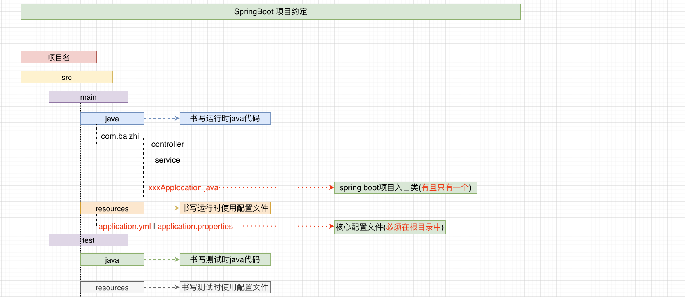
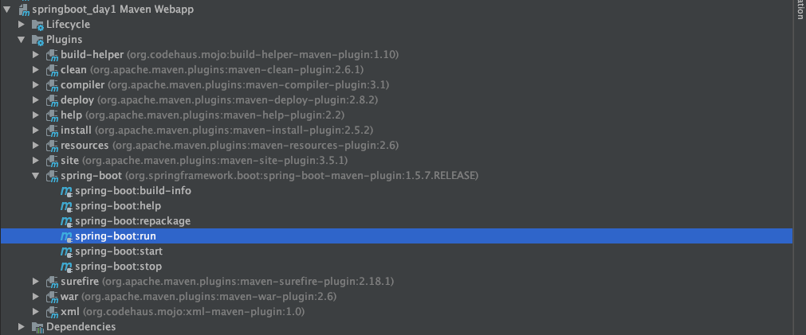
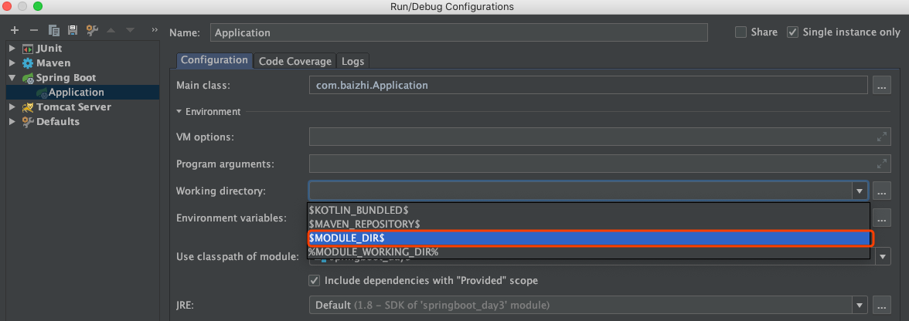
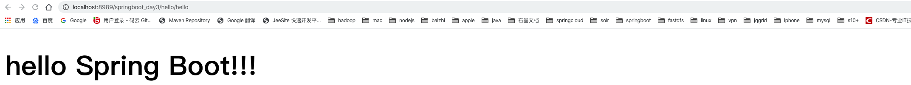
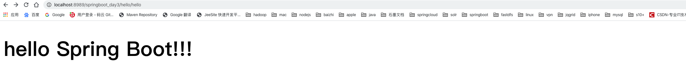
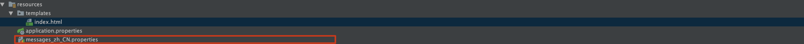
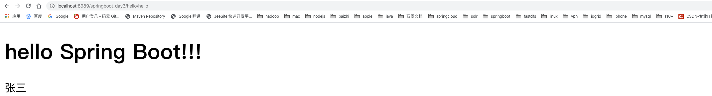
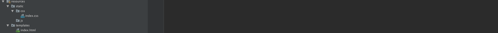
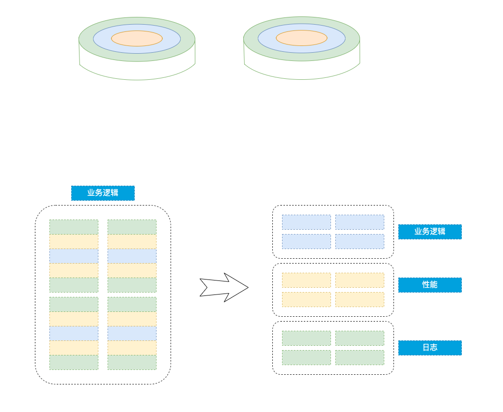

<!DOCTYPE html>
<html lang="zh-CN">
<head>
  <meta charset="UTF-8">
<meta name="viewport" content="width=device-width, initial-scale=1, maximum-scale=2">
<meta name="theme-color" content="#222">
<meta name="generator" content="Hexo 5.2.0">
  <link rel="apple-touch-icon" sizes="180x180" href="/images/apple-touch-icon-next.png">
  <link rel="icon" type="image/png" sizes="32x32" href="/images/favicon-32x32-next.png">
  <link rel="icon" type="image/png" sizes="16x16" href="/images/favicon-16x16-next.png">
  <link rel="mask-icon" href="/images/logo.svg" color="#222">

<link rel="stylesheet" href="/css/main.css">


<link rel="stylesheet" href="//cdn.jsdelivr.net/npm/@fortawesome/fontawesome-free@5.14.0/css/all.min.css">
  <link rel="stylesheet" href="//cdn.jsdelivr.net/npm/animate.css@3.1.1/animate.min.css">
  <link rel="stylesheet" href="//cdn.jsdelivr.net/npm/@fancyapps/fancybox@3.5.7/dist/jquery.fancybox.min.css">

<script class="hexo-configurations">
    var NexT = window.NexT || {};
    var CONFIG = {"hostname":"poundba.github.io","root":"/","scheme":"Gemini","version":"8.0.0","exturl":false,"sidebar":{"position":"left","display":"post","padding":18,"offset":12},"copycode":true,"bookmark":{"enable":false,"color":"#222","save":"auto"},"fancybox":true,"mediumzoom":false,"lazyload":false,"pangu":false,"comments":{"style":"buttons","active":null,"storage":true,"lazyload":false,"nav":null},"motion":{"enable":true,"async":false,"transition":{"post_block":"fadeIn","post_header":"fadeInDown","post_body":"fadeInDown","coll_header":"fadeInLeft","sidebar":"fadeInUp"}},"prism":false,"i18n":{"placeholder":"搜索...","empty":"没有找到任何搜索结果：${query}","hits_time":"找到 ${hits} 个搜索结果（用时 ${time} 毫秒）","hits":"找到 ${hits} 个搜索结果"},"path":"search.xml","localsearch":{"enable":true,"trigger":"auto","top_n_per_article":1,"unescape":false,"preload":false}};
  </script>

  <meta name="description" content="springboot的引言Spring Boot是由 Pivotal团队提供的全新框架 ，其设计目的是用来 简化Spring应用的 初始搭建以及开发过程 。该框架使用了 特定的方式来进行配置 ，从而使开发人员不再需要定义样板化的配置。通过这种方式，Spring Boot致力于在蓬勃发展的快速应用开发领域(rapid application development)成为领导者。 springboot">
<meta property="og:type" content="article">
<meta property="og:title" content="微框架(2020版)">
<meta property="og:url" content="https://poundba.github.io/springboot-2020/index.html">
<meta property="og:site_name" content="白衫故人">
<meta property="og:description" content="springboot的引言Spring Boot是由 Pivotal团队提供的全新框架 ，其设计目的是用来 简化Spring应用的 初始搭建以及开发过程 。该框架使用了 特定的方式来进行配置 ，从而使开发人员不再需要定义样板化的配置。通过这种方式，Spring Boot致力于在蓬勃发展的快速应用开发领域(rapid application development)成为领导者。 springboot">
<meta property="og:locale" content="zh_CN">
<meta property="og:image" content="https://poundba.github.io/springboot-2020/image-20200321091519423.png">
<meta property="og:image" content="https://poundba.github.io/springboot-2020/image-20191129124602959.png">
<meta property="og:image" content="https://poundba.github.io/springboot-2020/image-20191129124727562.png">
<meta property="og:image" content="https://poundba.github.io/springboot-2020/image-20200323085834206.png">
<meta property="og:image" content="https://poundba.github.io/springboot-2020/image-20200323085948499.png">
<meta property="og:image" content="https://poundba.github.io/springboot-2020/image-20200323090142705.png">
<meta property="og:image" content="https://poundba.github.io/springboot-2020/image-20200323100724749.png">
<meta property="og:image" content="https://poundba.github.io/springboot-2020/image-20200323100747881.png">
<meta property="og:image" content="https://poundba.github.io/springboot-2020/image-20200323100956740.png">
<meta property="og:image" content="https://poundba.github.io/springboot-2020/image-20200323101457134.png">
<meta property="og:image" content="https://poundba.github.io/springboot-2020/image-20200323103452620.png">
<meta property="og:image" content="https://poundba.github.io/springboot-2020/image-20200323142307411.png">
<meta property="og:image" content="https://poundba.github.io/springboot-2020/image-20200327115039033.png">
<meta property="article:published_time" content="2020-05-28T05:36:39.000Z">
<meta property="article:modified_time" content="2020-08-11T15:42:00.059Z">
<meta property="article:author" content="Dawn">
<meta property="article:tag" content="SpringBoot">
<meta property="article:tag" content="SpringMVC">
<meta property="article:tag" content="mybatis">
<meta name="twitter:card" content="summary">
<meta name="twitter:image" content="https://poundba.github.io/springboot-2020/image-20200321091519423.png">


<link rel="canonical" href="https://poundba.github.io/springboot-2020/">


<script data-pjax class="page-configurations">
  // https://hexo.io/docs/variables.html
  CONFIG.page = {
    sidebar: "",
    isHome : false,
    isPost : true,
    lang   : 'zh-CN'
  };
</script><script src="/live2d-widget/autoload.js"></script>

  <title>微框架(2020版) | 白衫故人</title>
  


  <noscript>
  <style>
  body { margin-top: 2rem; }

  .use-motion .menu-item,
  .use-motion .sidebar,
  .use-motion .post-block,
  .use-motion .pagination,
  .use-motion .comments,
  .use-motion .post-header,
  .use-motion .post-body,
  .use-motion .collection-header {
    visibility: visible;
  }

  .use-motion .header,
  .use-motion .site-brand-container .toggle,
  .use-motion .footer { opacity: initial; }

  .use-motion .site-title,
  .use-motion .site-subtitle,
  .use-motion .custom-logo-image {
    opacity: initial;
    top: initial;
  }

  .use-motion .logo-line {
    transform: scaleX(1);
  }

  .search-pop-overlay, .sidebar-nav { display: none; }
  .sidebar-panel { display: block; }
  </style>
</noscript>

<link rel="alternate" href="/atom.xml" title="白衫故人" type="application/atom+xml">
</head>

<body itemscope itemtype="http://schema.org/WebPage" class="use-motion">
  <div class="headband"></div>

  <main class="main">
    <header class="header" itemscope itemtype="http://schema.org/WPHeader">
      <div class="header-inner"><div class="site-brand-container">
  <div class="site-nav-toggle">
    <div class="toggle" aria-label="切换导航栏">
        <span class="toggle-line"></span>
        <span class="toggle-line"></span>
        <span class="toggle-line"></span>
    </div>
  </div>

  <div class="site-meta">

    <a href="/" class="brand" rel="start">
      <i class="logo-line"></i>
      <h1 class="site-title">白衫故人</h1>
      <i class="logo-line"></i>
    </a>
      <p class="site-subtitle" itemprop="description">有朋自远方来，不亦乐乎</p>
  </div>

  <div class="site-nav-right">
    <div class="toggle popup-trigger">
        <i class="fa fa-search fa-fw fa-lg"></i>
    </div>
  </div>
</div>


<nav class="site-nav">
  <ul class="main-menu menu">
        <li class="menu-item menu-item-home">

    <a href="/" rel="section"><i class="fa fa-home fa-fw"></i>首页</a>

  </li>
        <li class="menu-item menu-item-about">

    <a href="/about/" rel="section"><i class="fa fa-user fa-fw"></i>关于</a>

  </li>
        <li class="menu-item menu-item-music">

    <a href="/music/" rel="section"><i class="fa fa-music fa-fw"></i>音乐</a>

  </li>
        <li class="menu-item menu-item-tags">

    <a href="/tags/" rel="section"><i class="fa fa-tags fa-fw"></i>标签</a>

  </li>
        <li class="menu-item menu-item-categories">

    <a href="/categories/" rel="section"><i class="fa fa-th fa-fw"></i>分类</a>

  </li>
        <li class="menu-item menu-item-archives">

    <a href="/archives/" rel="section"><i class="fa fa-archive fa-fw"></i>时间轴</a>

  </li>
        <li class="menu-item menu-item-schedule">

    <a href="/schedule/" rel="section"><i class="fa fa-calendar fa-fw"></i>日程表</a>

  </li>
        <li class="menu-item menu-item-link">

    <a href="/link/" rel="section"><i class="fa fa-link fa-fw"></i>友人帐</a>

  </li>
        <li class="menu-item menu-item-guestbook">

    <a href="/guestbook/" rel="section"><i class="fa fa-paper-plane fa-fw"></i>留言板</a>

  </li>
        <li class="menu-item menu-item-bt">

    <a href="/bt/" rel="section"><i class="fa fa-rocket fa-fw"></i>BT Trackers</a>

  </li>
        <li class="menu-item menu-item-newpneumonia">

    <a href="https://voice.baidu.com/act/newpneumonia/newpneumonia/?from=osari_pc_3" rel="noopener" target="_blank"><i class="fa fa-medkit fa-fw"></i>新冠疫情</a>

  </li>
        <li class="menu-item menu-item-sitemap">

    <a href="/sitemap.xml" rel="section"><i class="fa fa-sitemap fa-fw"></i>站点地图</a>

  </li>
      <li class="menu-item menu-item-search">
        <a role="button" class="popup-trigger"><i class="fa fa-search fa-fw"></i>搜索
        </a>
      </li>
  </ul>
</nav>


  <div class="search-pop-overlay">
    <div class="popup search-popup">
        <div class="search-header">
  <span class="search-icon">
    <i class="fa fa-search"></i>
  </span>
  <div class="search-input-container">
    <input autocomplete="off" autocapitalize="off" maxlength="80"
           placeholder="搜索..." spellcheck="false"
           type="search" class="search-input">
  </div>
  <span class="popup-btn-close">
    <i class="fa fa-times-circle"></i>
  </span>
</div>
<div class="search-result-container no-result">
  <div class="search-result-icon">
    <i class="fa fa-spinner fa-pulse fa-5x"></i>
  </div>
</div>

    </div>
  </div>

</div>
        
  
  <div class="toggle sidebar-toggle">
    <span class="toggle-line"></span>
    <span class="toggle-line"></span>
    <span class="toggle-line"></span>
  </div>

  <aside class="sidebar">

    <div class="sidebar-inner sidebar-nav-active sidebar-toc-active">
      <ul class="sidebar-nav">
        <li class="sidebar-nav-toc">
          文章目录
        </li>
        <li class="sidebar-nav-overview">
          站点概览
        </li>
      </ul>

      <!--noindex-->
      <section class="post-toc-wrap sidebar-panel">
          <div class="post-toc animated"><ol class="nav"><li class="nav-item nav-level-1"><a class="nav-link" href="#springboot%E7%9A%84%E5%BC%95%E8%A8%80"><span class="nav-number">1.</span> <span class="nav-text">springboot的引言</span></a><ol class="nav-child"><li class="nav-item nav-level-2"><a class="nav-link" href="#SSM-Spring-springmvc-mybatis-lt-%E2%80%94-SSM-Spring-stauts2-struts1-mybatis-lt-%E2%80%94-SSH-Spring-Struts-Hibernate"><span class="nav-number">1.1.</span> <span class="nav-text">SSM Spring springmvc  mybatis    &lt;—-   SSM Spring  stauts2|struts1  mybatis  &lt;— SSH Spring Struts  Hibernate </span></a></li></ol></li><li class="nav-item nav-level-1"><a class="nav-link" href="#springboot%E7%9A%84%E7%89%B9%E7%82%B9"><span class="nav-number">2.</span> <span class="nav-text">springboot的特点</span></a></li><li class="nav-item nav-level-1"><a class="nav-link" href="#springboot-%E7%9A%84%E7%BA%A6%E5%AE%9A%E5%A4%A7%E4%BA%8E%E9%85%8D%E7%BD%AE"><span class="nav-number">3.</span> <span class="nav-text">springboot 的约定大于配置</span></a></li><li class="nav-item nav-level-1"><a class="nav-link" href="#springboot%E7%9A%84%E7%8E%AF%E5%A2%83%E6%90%AD%E5%BB%BA"><span class="nav-number">4.</span> <span class="nav-text">springboot的环境搭建</span></a><ol class="nav-child"><li class="nav-item nav-level-2"><a class="nav-link" href="#%E9%A1%B9%E7%9B%AE%E4%B8%AD%E5%BC%95%E5%85%A5%E4%BE%9D%E8%B5%96"><span class="nav-number">4.1.</span> <span class="nav-text">项目中引入依赖</span></a></li><li class="nav-item nav-level-2"><a class="nav-link" href="#%E5%BC%95%E5%85%A5%E9%85%8D%E7%BD%AE%E6%96%87%E4%BB%B6"><span class="nav-number">4.2.</span> <span class="nav-text">引入配置文件</span></a></li><li class="nav-item nav-level-2"><a class="nav-link" href="#%E5%BB%BA%E5%8C%85%E5%B9%B6%E5%88%9B%E5%BB%BA%E6%8E%A7%E5%88%B6%E5%99%A8"><span class="nav-number">4.3.</span> <span class="nav-text">建包并创建控制器</span></a></li><li class="nav-item nav-level-2"><a class="nav-link" href="#%E7%BC%96%E5%86%99%E5%85%A5%E5%8F%A3%E7%B1%BB"><span class="nav-number">4.4.</span> <span class="nav-text">编写入口类</span></a></li><li class="nav-item nav-level-2"><a class="nav-link" href="#%E8%BF%90%E8%A1%8Cmain%E5%90%AF%E5%8A%A8%E9%A1%B9%E7%9B%AE"><span class="nav-number">4.5.</span> <span class="nav-text">运行main启动项目</span></a></li><li class="nav-item nav-level-2"><a class="nav-link" href="#%E8%AE%BF%E9%97%AE%E9%A1%B9%E7%9B%AE"><span class="nav-number">4.6.</span> <span class="nav-text">访问项目</span></a></li></ol></li><li class="nav-item nav-level-1"><a class="nav-link" href="#%E5%90%AF%E5%8A%A8tomcat%E7%AB%AF%E5%8F%A3%E5%8D%A0%E7%94%A8%E9%97%AE%E9%A2%98"><span class="nav-number">5.</span> <span class="nav-text">启动tomcat端口占用问题</span></a></li><li class="nav-item nav-level-1"><a class="nav-link" href="#springboot%E7%9B%B8%E5%85%B3%E6%B3%A8%E8%A7%A3%E8%AF%B4%E6%98%8E"><span class="nav-number">6.</span> <span class="nav-text">springboot相关注解说明</span></a></li><li class="nav-item nav-level-1"><a class="nav-link" href="#springboot%E4%B8%AD%E9%85%8D%E7%BD%AE%E6%96%87%E4%BB%B6%E7%9A%84%E6%8B%86%E5%88%86"><span class="nav-number">7.</span> <span class="nav-text">springboot中配置文件的拆分</span></a></li><li class="nav-item nav-level-1"><a class="nav-link" href="#springboot%E4%B8%AD%E5%88%9B%E5%BB%BA%E8%87%AA%E5%AE%9A%E4%B9%89%E7%AE%80%E5%8D%95%E5%AF%B9%E8%B1%A1"><span class="nav-number">8.</span> <span class="nav-text">springboot中创建自定义简单对象</span></a><ol class="nav-child"><li class="nav-item nav-level-2"><a class="nav-link" href="#%E7%AE%A1%E7%90%86%E5%8D%95%E4%B8%AA%E5%AF%B9%E8%B1%A1"><span class="nav-number">8.1.</span> <span class="nav-text">管理单个对象</span></a></li><li class="nav-item nav-level-2"><a class="nav-link" href="#%E7%AE%A1%E7%90%86%E5%A4%9A%E4%B8%AA%E5%AF%B9%E8%B1%A1"><span class="nav-number">8.2.</span> <span class="nav-text">管理多个对象</span></a></li></ol></li><li class="nav-item nav-level-1"><a class="nav-link" href="#springboot%E4%B8%AD%E6%B3%A8%E5%85%A5"><span class="nav-number">9.</span> <span class="nav-text">springboot中注入</span></a><ol class="nav-child"><li class="nav-item nav-level-2"><a class="nav-link" href="#%E5%9F%BA%E6%9C%AC%E5%B1%9E%E6%80%A7%E6%B3%A8%E5%85%A5"><span class="nav-number">9.1.</span> <span class="nav-text">基本属性注入</span></a></li><li class="nav-item nav-level-2"><a class="nav-link" href="#%E5%AF%B9%E8%B1%A1%E6%96%B9%E5%BC%8F%E6%B3%A8%E5%85%A5"><span class="nav-number">9.2.</span> <span class="nav-text">对象方式注入</span></a></li></ol></li><li class="nav-item nav-level-1"><a class="nav-link" href="#springboot%E4%B8%AD%E4%B8%A4%E7%A7%8D%E6%A8%A1%E6%9D%BF%E9%85%8D%E7%BD%AE"><span class="nav-number">10.</span> <span class="nav-text">springboot中两种模板配置</span></a><ol class="nav-child"><li class="nav-item nav-level-2"><a class="nav-link" href="#%E9%9B%86%E6%88%90jsp%E6%A8%A1%E6%9D%BF"><span class="nav-number">10.1.</span> <span class="nav-text">集成jsp模板</span></a><ol class="nav-child"><li class="nav-item nav-level-3"><a class="nav-link" href="#%E5%BC%95%E5%85%A5jsp%E7%9A%84%E9%9B%86%E6%88%90jar%E5%8C%85"><span class="nav-number">10.1.1.</span> <span class="nav-text">引入jsp的集成jar包</span></a></li><li class="nav-item nav-level-3"><a class="nav-link" href="#%E5%BC%95%E5%85%A5jsp%E8%BF%90%E8%A1%8C%E6%8F%92%E4%BB%B6"><span class="nav-number">10.1.2.</span> <span class="nav-text">引入jsp运行插件</span></a></li><li class="nav-item nav-level-3"><a class="nav-link" href="#%E9%85%8D%E7%BD%AE%E8%A7%86%E5%9B%BE%E8%A7%A3%E6%9E%90%E5%99%A8"><span class="nav-number">10.1.3.</span> <span class="nav-text">配置视图解析器</span></a></li><li class="nav-item nav-level-3"><a class="nav-link" href="#%E7%AC%AC%E4%B8%80%E7%A7%8D%E6%96%B9%E5%BC%8F%E4%BD%BF%E7%94%A8%E6%8F%92%E4%BB%B6%E5%90%AF%E5%8A%A8"><span class="nav-number">10.1.4.</span> <span class="nav-text">第一种方式使用插件启动</span></a></li><li class="nav-item nav-level-3"><a class="nav-link" href="#%E7%AC%AC%E4%BA%8C%E7%A7%8D%E6%96%B9%E5%BC%8F%E4%BD%BF%E7%94%A8idea%E4%B8%AD%E6%8C%87%E5%AE%9A%E5%B7%A5%E4%BD%9C%E7%9B%AE%E5%BD%95%E5%90%AF%E5%8A%A8-%E6%8E%A8%E8%8D%90"><span class="nav-number">10.1.5.</span> <span class="nav-text">第二种方式使用idea中指定工作目录启动  [推荐]</span></a></li><li class="nav-item nav-level-3"><a class="nav-link" href="#%E5%90%AF%E5%8A%A8%E8%AE%BF%E9%97%AEjsp%E9%A1%B5%E9%9D%A2"><span class="nav-number">10.1.6.</span> <span class="nav-text">启动访问jsp页面</span></a></li><li class="nav-item nav-level-3"><a class="nav-link" href="#%E4%BF%AE%E6%94%B9jsp%E6%97%A0%E9%A1%BB%E9%87%8D%E5%90%AF%E5%BA%94%E7%94%A8"><span class="nav-number">10.1.7.</span> <span class="nav-text">修改jsp无须重启应用</span></a></li></ol></li><li class="nav-item nav-level-2"><a class="nav-link" href="#%E9%9B%86%E6%88%90thymelaf%E6%A8%A1%E6%9D%BF"><span class="nav-number">10.2.</span> <span class="nav-text">集成thymelaf模板</span></a><ol class="nav-child"><li class="nav-item nav-level-3"><a class="nav-link" href="#%E5%BC%95%E5%85%A5%E4%BE%9D%E8%B5%96"><span class="nav-number">10.2.1.</span> <span class="nav-text">引入依赖</span></a></li><li class="nav-item nav-level-3"><a class="nav-link" href="#%E7%BC%96%E5%86%99%E9%85%8D%E7%BD%AE"><span class="nav-number">10.2.2.</span> <span class="nav-text">编写配置</span></a></li><li class="nav-item nav-level-3"><a class="nav-link" href="#%E7%BC%96%E5%86%99%E6%8E%A7%E5%88%B6%E5%99%A8%E6%B5%8B%E8%AF%95"><span class="nav-number">10.2.3.</span> <span class="nav-text">编写控制器测试</span></a></li><li class="nav-item nav-level-3"><a class="nav-link" href="#%E5%9C%A8templates%E7%9B%AE%E5%BD%95%E4%B8%AD%E5%AE%9A%E4%B9%89%E6%A8%A1%E6%9D%BF"><span class="nav-number">10.2.4.</span> <span class="nav-text">在templates目录中定义模板</span></a></li><li class="nav-item nav-level-3"><a class="nav-link" href="#%E6%B5%8B%E8%AF%95%E8%AE%BF%E9%97%AE"><span class="nav-number">10.2.5.</span> <span class="nav-text">测试访问</span></a></li><li class="nav-item nav-level-3"><a class="nav-link" href="#%E6%9F%A5%E7%9C%8B%E7%BB%93%E6%9E%9C"><span class="nav-number">10.2.6.</span> <span class="nav-text">查看结果</span></a></li><li class="nav-item nav-level-3"><a class="nav-link" href="#%E5%BC%80%E5%90%AF%E7%9B%B4%E6%8E%A5%E8%AE%BF%E9%97%AEhtml%E9%A1%B5%E9%9D%A2"><span class="nav-number">10.2.7.</span> <span class="nav-text">开启直接访问html页面</span></a></li><li class="nav-item nav-level-3"><a class="nav-link" href="#%E6%B5%8B%E8%AF%95%E7%BB%93%E6%9E%9C"><span class="nav-number">10.2.8.</span> <span class="nav-text">测试结果</span></a></li></ol></li><li class="nav-item nav-level-2"><a class="nav-link" href="#Thymeleaf%E5%9F%BA%E6%9C%AC%E4%BD%BF%E7%94%A8"><span class="nav-number">10.3.</span> <span class="nav-text">Thymeleaf基本使用</span></a><ol class="nav-child"><li class="nav-item nav-level-3"><a class="nav-link" href="#%E5%B1%95%E7%A4%BA%E5%8D%95%E4%B8%AA%E6%95%B0%E6%8D%AE"><span class="nav-number">10.3.1.</span> <span class="nav-text">展示单个数据</span></a><ol class="nav-child"><li class="nav-item nav-level-4"><a class="nav-link" href="#a-%E8%AE%BE%E7%BD%AE%E6%95%B0%E6%8D%AE"><span class="nav-number">10.3.1.1.</span> <span class="nav-text">a. 设置数据</span></a></li><li class="nav-item nav-level-4"><a class="nav-link" href="#b-%E8%8E%B7%E5%8F%96%E6%95%B0%E6%8D%AE"><span class="nav-number">10.3.1.2.</span> <span class="nav-text">b. 获取数据</span></a></li><li class="nav-item nav-level-4"><a class="nav-link" href="#c-%E8%8E%B7%E5%8F%96%E5%B9%B6%E8%A7%A3%E6%9E%90%E5%90%AB%E6%9C%89html%E6%A0%87%E7%AD%BE%E6%95%B0%E6%8D%AE"><span class="nav-number">10.3.1.3.</span> <span class="nav-text">c. 获取并解析含有html标签数据</span></a></li></ol></li><li class="nav-item nav-level-3"><a class="nav-link" href="#%E5%B1%95%E7%A4%BA%E5%AF%B9%E8%B1%A1%E6%95%B0%E6%8D%AE"><span class="nav-number">10.3.2.</span> <span class="nav-text">展示对象数据</span></a></li><li class="nav-item nav-level-3"><a class="nav-link" href="#%E6%9D%A1%E4%BB%B6%E5%B1%95%E7%A4%BA%E6%95%B0%E6%8D%AE"><span class="nav-number">10.3.3.</span> <span class="nav-text">条件展示数据</span></a></li><li class="nav-item nav-level-3"><a class="nav-link" href="#%E5%B1%95%E7%A4%BA%E5%A4%9A%E6%9D%A1%E6%95%B0%E6%8D%AE"><span class="nav-number">10.3.4.</span> <span class="nav-text">展示多条数据</span></a></li><li class="nav-item nav-level-3"><a class="nav-link" href="#%E5%BC%95%E5%85%A5%E9%9D%99%E6%80%81%E8%B5%84%E6%BA%90"><span class="nav-number">10.3.5.</span> <span class="nav-text">引入静态资源</span></a></li></ol></li></ol></li><li class="nav-item nav-level-1"><a class="nav-link" href="#springboot%E9%9B%86%E6%88%90mybatis"><span class="nav-number">11.</span> <span class="nav-text">springboot集成mybatis</span></a><ol class="nav-child"><li class="nav-item nav-level-2"><a class="nav-link" href="#%E5%BC%95%E5%85%A5%E4%BE%9D%E8%B5%96-1"><span class="nav-number">11.1.</span> <span class="nav-text">引入依赖</span></a></li><li class="nav-item nav-level-2"><a class="nav-link" href="#%E9%85%8D%E7%BD%AE%E9%85%8D%E7%BD%AE%E6%96%87%E4%BB%B6"><span class="nav-number">11.2.</span> <span class="nav-text">配置配置文件</span></a></li><li class="nav-item nav-level-2"><a class="nav-link" href="#%E5%8A%A0%E5%85%A5mybatis%E9%85%8D%E7%BD%AE"><span class="nav-number">11.3.</span> <span class="nav-text">加入mybatis配置</span></a></li><li class="nav-item nav-level-2"><a class="nav-link" href="#%E5%BB%BA%E8%A1%A8"><span class="nav-number">11.4.</span> <span class="nav-text">建表</span></a></li><li class="nav-item nav-level-2"><a class="nav-link" href="#%E5%BC%80%E5%8F%91%E5%AE%9E%E4%BD%93%E7%B1%BB"><span class="nav-number">11.5.</span> <span class="nav-text">开发实体类</span></a></li><li class="nav-item nav-level-2"><a class="nav-link" href="#%E5%BC%80%E5%8F%91DAO%E6%8E%A5%E5%8F%A3%E4%BB%A5%E5%8F%8AMapper"><span class="nav-number">11.6.</span> <span class="nav-text">开发DAO接口以及Mapper</span></a></li><li class="nav-item nav-level-2"><a class="nav-link" href="#%E5%BC%80%E5%8F%91Service%E4%BB%A5%E5%8F%8A%E5%AE%9E%E7%8E%B0"><span class="nav-number">11.7.</span> <span class="nav-text">开发Service以及实现</span></a></li><li class="nav-item nav-level-2"><a class="nav-link" href="#11-8-%E5%BC%95%E5%85%A5%E6%B5%8B%E8%AF%95%E4%BE%9D%E8%B5%96"><span class="nav-number">11.8.</span> <span class="nav-text">11.8 引入测试依赖</span></a></li><li class="nav-item nav-level-2"><a class="nav-link" href="#%E7%BC%96%E5%86%99%E6%B5%8B%E8%AF%95%E7%B1%BB"><span class="nav-number">11.9.</span> <span class="nav-text">编写测试类</span></a></li></ol></li><li class="nav-item nav-level-1"><a class="nav-link" href="#%E5%BC%80%E5%90%AFjsp%E9%A1%B5%E9%9D%A2%E7%83%AD%E9%83%A8%E7%BD%B2"><span class="nav-number">12.</span> <span class="nav-text">开启jsp页面热部署</span></a><ol class="nav-child"><li class="nav-item nav-level-2"><a class="nav-link" href="#%E5%BC%95%E8%A8%80"><span class="nav-number">12.1.</span> <span class="nav-text">引言</span></a></li><li class="nav-item nav-level-2"><a class="nav-link" href="#%E9%85%8D%E7%BD%AE%E5%BC%80%E5%90%AF%E6%B5%8B%E8%AF%95%E6%A8%A1%E5%BC%8F"><span class="nav-number">12.2.</span> <span class="nav-text">配置开启测试模式</span></a></li></ol></li><li class="nav-item nav-level-1"><a class="nav-link" href="#springboot%E4%B8%ADdevtools%E7%83%AD%E9%83%A8%E7%BD%B2"><span class="nav-number">13.</span> <span class="nav-text">springboot中devtools热部署</span></a><ol class="nav-child"><li class="nav-item nav-level-2"><a class="nav-link" href="#%E5%BC%95%E8%A8%80-1"><span class="nav-number">13.1.</span> <span class="nav-text">引言</span></a></li><li class="nav-item nav-level-2"><a class="nav-link" href="#%E5%BC%80%E5%90%AF%E7%83%AD%E9%83%A8%E7%BD%B2"><span class="nav-number">13.2.</span> <span class="nav-text">开启热部署</span></a><ol class="nav-child"><li class="nav-item nav-level-3"><a class="nav-link" href="#%E9%A1%B9%E7%9B%AE%E4%B8%AD%E5%BC%95%E5%85%A5%E4%BE%9D%E8%B5%96-1"><span class="nav-number">13.2.1.</span> <span class="nav-text">项目中引入依赖</span></a></li><li class="nav-item nav-level-3"><a class="nav-link" href="#%E8%AE%BE%E7%BD%AEidea%E4%B8%AD%E6%94%AF%E6%8C%81%E8%87%AA%E5%8A%A8%E7%BC%96%E8%AF%91"><span class="nav-number">13.2.2.</span> <span class="nav-text">设置idea中支持自动编译</span></a></li><li class="nav-item nav-level-3"><a class="nav-link" href="#%E5%90%AF%E5%8A%A8%E9%A1%B9%E7%9B%AE%E6%A3%80%E6%B5%8B%E7%83%AD%E9%83%A8%E7%BD%B2%E6%98%AF%E5%90%A6%E7%94%9F%E6%95%88"><span class="nav-number">13.2.3.</span> <span class="nav-text">启动项目检测热部署是否生效</span></a></li></ol></li></ol></li><li class="nav-item nav-level-1"><a class="nav-link" href="#logback%E6%97%A5%E5%BF%97%E7%9A%84%E9%9B%86%E6%88%90"><span class="nav-number">14.</span> <span class="nav-text">logback日志的集成</span></a><ol class="nav-child"><li class="nav-item nav-level-2"><a class="nav-link" href="#logback%E7%AE%80%E4%BB%8B"><span class="nav-number">14.1.</span> <span class="nav-text">logback简介</span></a></li><li class="nav-item nav-level-2"><a class="nav-link" href="#%E6%97%A5%E5%BF%97%E7%9A%84%E7%BA%A7%E5%88%AB"><span class="nav-number">14.2.</span> <span class="nav-text">日志的级别</span></a></li><li class="nav-item nav-level-2"><a class="nav-link" href="#%E9%A1%B9%E7%9B%AE%E4%B8%AD%E6%97%A5%E5%BF%97%E5%88%86%E7%B1%BB"><span class="nav-number">14.3.</span> <span class="nav-text">项目中日志分类</span></a></li><li class="nav-item nav-level-2"><a class="nav-link" href="#java%E9%A1%B9%E7%9B%AE%E4%B8%AD%E4%BD%BF%E7%94%A8"><span class="nav-number">14.4.</span> <span class="nav-text">java项目中使用</span></a><ol class="nav-child"><li class="nav-item nav-level-3"><a class="nav-link" href="#logback%E9%85%8D%E7%BD%AE%E6%96%87%E4%BB%B6"><span class="nav-number">14.4.1.</span> <span class="nav-text">logback配置文件</span></a></li><li class="nav-item nav-level-3"><a class="nav-link" href="#%E5%85%B7%E4%BD%93%E7%B1%BB%E4%B8%AD%E4%BD%BF%E7%94%A8%E6%97%A5%E5%BF%97"><span class="nav-number">14.4.2.</span> <span class="nav-text">具体类中使用日志</span></a></li><li class="nav-item nav-level-3"><a class="nav-link" href="#%E4%BD%BF%E7%94%A8%E9%BB%98%E8%AE%A4%E6%97%A5%E5%BF%97%E9%85%8D%E7%BD%AE"><span class="nav-number">14.4.3.</span> <span class="nav-text">使用默认日志配置</span></a></li></ol></li></ol></li><li class="nav-item nav-level-1"><a class="nav-link" href="#%E5%88%87%E9%9D%A2%E7%BC%96%E7%A8%8B"><span class="nav-number">15.</span> <span class="nav-text">切面编程</span></a><ol class="nav-child"><li class="nav-item nav-level-2"><a class="nav-link" href="#%E5%BC%95%E8%A8%80-2"><span class="nav-number">15.1.</span> <span class="nav-text">引言</span></a></li><li class="nav-item nav-level-2"><a class="nav-link" href="#%E4%BD%BF%E7%94%A8"><span class="nav-number">15.2.</span> <span class="nav-text">使用</span></a><ol class="nav-child"><li class="nav-item nav-level-3"><a class="nav-link" href="#%E5%BC%95%E5%85%A5%E4%BE%9D%E8%B5%96-2"><span class="nav-number">15.2.1.</span> <span class="nav-text">引入依赖</span></a></li><li class="nav-item nav-level-3"><a class="nav-link" href="#%E7%9B%B8%E5%85%B3%E6%B3%A8%E8%A7%A3"><span class="nav-number">15.2.2.</span> <span class="nav-text">相关注解</span></a></li><li class="nav-item nav-level-3"><a class="nav-link" href="#%E5%89%8D%E7%BD%AE%E5%88%87%E9%9D%A2"><span class="nav-number">15.2.3.</span> <span class="nav-text">前置切面</span></a></li><li class="nav-item nav-level-3"><a class="nav-link" href="#%E5%90%8E%E7%BD%AE%E5%88%87%E9%9D%A2"><span class="nav-number">15.2.4.</span> <span class="nav-text">后置切面</span></a></li><li class="nav-item nav-level-3"><a class="nav-link" href="#%E7%8E%AF%E7%BB%95%E5%88%87%E9%9D%A2"><span class="nav-number">15.2.5.</span> <span class="nav-text">环绕切面</span></a></li></ol></li></ol></li><li class="nav-item nav-level-1"><a class="nav-link" href="#%E6%96%87%E4%BB%B6%E4%B8%8A%E4%BC%A0%E4%B8%8B%E8%BD%BD"><span class="nav-number">16.</span> <span class="nav-text">文件上传下载</span></a><ol class="nav-child"><li class="nav-item nav-level-2"><a class="nav-link" href="#%E6%96%87%E4%BB%B6%E4%B8%8A%E4%BC%A0"><span class="nav-number">16.1.</span> <span class="nav-text">文件上传</span></a><ol class="nav-child"><li class="nav-item nav-level-3"><a class="nav-link" href="#%E5%87%86%E5%A4%87%E4%B8%8A%E4%BC%A0%E9%A1%B5%E9%9D%A2"><span class="nav-number">16.1.1.</span> <span class="nav-text">准备上传页面</span></a></li><li class="nav-item nav-level-3"><a class="nav-link" href="#%E7%BC%96%E5%86%99%E6%8E%A7%E5%88%B6%E5%99%A8"><span class="nav-number">16.1.2.</span> <span class="nav-text">编写控制器</span></a></li><li class="nav-item nav-level-3"><a class="nav-link" href="#%E4%BF%AE%E6%94%B9%E6%96%87%E4%BB%B6%E4%B8%8A%E4%BC%A0%E5%A4%A7%E5%B0%8F"><span class="nav-number">16.1.3.</span> <span class="nav-text">修改文件上传大小</span></a></li></ol></li><li class="nav-item nav-level-2"><a class="nav-link" href="#%E6%96%87%E4%BB%B6%E4%B8%8B%E8%BD%BD"><span class="nav-number">16.2.</span> <span class="nav-text">文件下载</span></a><ol class="nav-child"><li class="nav-item nav-level-3"><a class="nav-link" href="#%E6%8F%90%E4%BE%9B%E4%B8%8B%E8%BD%BD%E6%96%87%E4%BB%B6%E9%93%BE%E6%8E%A5"><span class="nav-number">16.2.1.</span> <span class="nav-text">提供下载文件链接</span></a></li><li class="nav-item nav-level-3"><a class="nav-link" href="#%E5%BC%80%E5%8F%91%E6%8E%A7%E5%88%B6%E5%99%A8"><span class="nav-number">16.2.2.</span> <span class="nav-text">开发控制器</span></a></li></ol></li></ol></li><li class="nav-item nav-level-1"><a class="nav-link" href="#%E6%8B%A6%E6%88%AA%E5%99%A8"><span class="nav-number">17.</span> <span class="nav-text">拦截器</span></a><ol class="nav-child"><li class="nav-item nav-level-2"><a class="nav-link" href="#%E5%BC%80%E5%8F%91%E6%8B%A6%E6%88%AA%E5%99%A8"><span class="nav-number">17.1.</span> <span class="nav-text">开发拦截器</span></a></li><li class="nav-item nav-level-2"><a class="nav-link" href="#%E9%85%8D%E7%BD%AE%E6%8B%A6%E6%88%AA%E5%99%A8"><span class="nav-number">17.2.</span> <span class="nav-text">配置拦截器</span></a></li></ol></li><li class="nav-item nav-level-1"><a class="nav-link" href="#war%E5%8C%85%E9%83%A8%E7%BD%B2"><span class="nav-number">18.</span> <span class="nav-text">war包部署</span></a><ol class="nav-child"><li class="nav-item nav-level-2"><a class="nav-link" href="#%E8%AE%BE%E7%BD%AE%E6%89%93%E5%8C%85%E6%96%B9%E5%BC%8F%E4%B8%BAwar"><span class="nav-number">18.1.</span> <span class="nav-text">设置打包方式为war</span></a></li><li class="nav-item nav-level-2"><a class="nav-link" href="#%E5%9C%A8%E6%8F%92%E4%BB%B6%E4%B8%AD%E6%8C%87%E5%AE%9A%E5%85%A5%E5%8F%A3%E7%B1%BB"><span class="nav-number">18.2.</span> <span class="nav-text">在插件中指定入口类</span></a></li><li class="nav-item nav-level-2"><a class="nav-link" href="#%E6%8E%92%E9%99%A4%E5%86%85%E5%B5%8C%E7%9A%84tomcat"><span class="nav-number">18.3.</span> <span class="nav-text">排除内嵌的tomcat</span></a></li><li class="nav-item nav-level-2"><a class="nav-link" href="#%E9%85%8D%E7%BD%AE%E5%85%A5%E5%8F%A3%E7%B1%BB"><span class="nav-number">18.4.</span> <span class="nav-text">配置入口类</span></a></li><li class="nav-item nav-level-2"><a class="nav-link" href="#%E6%89%93%E5%8C%85%E6%B5%8B%E8%AF%95"><span class="nav-number">18.5.</span> <span class="nav-text">打包测试</span></a></li></ol></li></ol></div>
      </section>
      <!--/noindex-->

      <section class="site-overview-wrap sidebar-panel">
        <div class="site-author animated" itemprop="author" itemscope itemtype="http://schema.org/Person">
    
  <p class="site-author-name" itemprop="name">Dawn</p>
  <div class="site-description" itemprop="description">以梦为马，不负韶华</div>
</div>
<div class="site-state-wrap animated">
  <nav class="site-state">
      <div class="site-state-item site-state-posts">
          <a href="/archives/">
        
          <span class="site-state-item-count">28</span>
          <span class="site-state-item-name">日志</span>
        </a>
      </div>
      <div class="site-state-item site-state-categories">
            <a href="/categories/">
          
        <span class="site-state-item-count">20</span>
        <span class="site-state-item-name">分类</span></a>
      </div>
      <div class="site-state-item site-state-tags">
            <a href="/tags/">
          
        <span class="site-state-item-count">41</span>
        <span class="site-state-item-name">标签</span></a>
      </div>
  </nav>
</div>
  <div class="sidebar-button animated"><i class="fa fa-comment"></i>
    Chat
  </a>
  </div>
  <div class="links-of-author animated">
      <span class="links-of-author-item">
        <a href="https://github.com/Poundba" title="GitHub → https:&#x2F;&#x2F;github.com&#x2F;Poundba" rel="noopener" target="_blank"><i class="fab fa-github fa-fw"></i>GitHub</a>
      </span>
      <span class="links-of-author-item">
        <a href="mailto:zhanjizhuang@gmail.com" title="E-Mail → mailto:zhanjizhuang@gmail.com" rel="noopener" target="_blank"><i class="fa fa-envelope fa-fw"></i>E-Mail</a>
      </span>
  </div>


      </section>
        <div class="back-to-top animated">
          <i class="fa fa-arrow-up"></i>
          <span>0%</span>
        </div>
    </div>
  </aside>
  <div class="sidebar-dimmer"></div>


    </header>

    
  <div class="reading-progress-bar"></div>

  <a href="https://github.com/Poundba" class="github-corner" title="Follow me on GitHub" aria-label="Follow me on GitHub" rel="noopener" target="_blank"><svg width="80" height="80" viewBox="0 0 250 250" aria-hidden="true"><path d="M0,0 L115,115 L130,115 L142,142 L250,250 L250,0 Z"></path><path d="M128.3,109.0 C113.8,99.7 119.0,89.6 119.0,89.6 C122.0,82.7 120.5,78.6 120.5,78.6 C119.2,72.0 123.4,76.3 123.4,76.3 C127.3,80.9 125.5,87.3 125.5,87.3 C122.9,97.6 130.6,101.9 134.4,103.2" fill="currentColor" style="transform-origin: 130px 106px;" class="octo-arm"></path><path d="M115.0,115.0 C114.9,115.1 118.7,116.5 119.8,115.4 L133.7,101.6 C136.9,99.2 139.9,98.4 142.2,98.6 C133.8,88.0 127.5,74.4 143.8,58.0 C148.5,53.4 154.0,51.2 159.7,51.0 C160.3,49.4 163.2,43.6 171.4,40.1 C171.4,40.1 176.1,42.5 178.8,56.2 C183.1,58.6 187.2,61.8 190.9,65.4 C194.5,69.0 197.7,73.2 200.1,77.6 C213.8,80.2 216.3,84.9 216.3,84.9 C212.7,93.1 206.9,96.0 205.4,96.6 C205.1,102.4 203.0,107.8 198.3,112.5 C181.9,128.9 168.3,122.5 157.7,114.1 C157.9,116.9 156.7,120.9 152.7,124.9 L141.0,136.5 C139.8,137.7 141.6,141.9 141.8,141.8 Z" fill="currentColor" class="octo-body"></path></svg></a>

<noscript>
  <div class="noscript-warning">Theme NexT works best with JavaScript enabled</div>
</noscript>


    <div class="main-inner post posts-expand">
      

      

    
  
  
  <article itemscope itemtype="http://schema.org/Article" class="post-block" lang="zh-CN">
    <link itemprop="mainEntityOfPage" href="https://poundba.github.io/springboot-2020/">

    <span hidden itemprop="author" itemscope itemtype="http://schema.org/Person">
      <meta itemprop="image" content="/images/cat.jpg">
      <meta itemprop="name" content="Dawn">
      <meta itemprop="description" content="以梦为马，不负韶华">
    </span>

    <span hidden itemprop="publisher" itemscope itemtype="http://schema.org/Organization">
      <meta itemprop="name" content="白衫故人">
    </span>

    
    
      <header class="post-header">
        <h1 class="post-title" itemprop="name headline">
          微框架(2020版)
        </h1>

        <div class="post-meta-container">
          <div class="post-meta">
    <span class="post-meta-item">
      <span class="post-meta-item-icon">
        <i class="far fa-calendar"></i>
      </span>
      <span class="post-meta-item-text">发表于</span>

      <time title="创建时间：2020-05-28 13:36:39" itemprop="dateCreated datePublished" datetime="2020-05-28T13:36:39+08:00">2020-05-28</time>
    </span>
      <span class="post-meta-item">
        <span class="post-meta-item-icon">
          <i class="far fa-calendar-check"></i>
        </span>
        <span class="post-meta-item-text">更新于</span>
        <time title="修改时间：2020-08-11 23:42:00" itemprop="dateModified" datetime="2020-08-11T23:42:00+08:00">2020-08-11</time>
      </span>
    <span class="post-meta-item">
      <span class="post-meta-item-icon">
        <i class="far fa-folder"></i>
      </span>
      <span class="post-meta-item-text">分类于</span>
        <span itemprop="about" itemscope itemtype="http://schema.org/Thing">
          <a href="/categories/%E7%BC%96%E7%A8%8B/" itemprop="url" rel="index"><span itemprop="name">编程</span></a>
        </span>
    </span>

  
    <span class="post-meta-item" title="阅读次数" id="busuanzi_container_page_pv" style="display: none;">
      <span class="post-meta-item-icon">
        <i class="far fa-eye"></i>
      </span>
      <span class="post-meta-item-text">阅读次数：</span>
      <span id="busuanzi_value_page_pv"></span>
    </span>
  
  <span class="post-meta-item">
    
      <span class="post-meta-item-icon">
        <i class="far fa-comment"></i>
      </span>
      <span class="post-meta-item-text">评论：</span>
    
    <a title="valine" href="/springboot-2020/#valine-comments" itemprop="discussionUrl">
      <span class="post-comments-count valine-comment-count" data-xid="/springboot-2020/" itemprop="commentCount"></span>
    </a>
  </span>
  
  
      </div>
      <div class="post-meta">
    <span class="post-meta-item" title="本文字数">
      <span class="post-meta-item-icon">
        <i class="far fa-file-word"></i>
      </span>
      <span class="post-meta-item-text">本文字数：</span>
      <span>23k</span>
    </span>
    <span class="post-meta-item" title="阅读时长">
      <span class="post-meta-item-icon">
        <i class="far fa-clock"></i>
      </span>
      <span class="post-meta-item-text">阅读时长 &asymp;</span>
      <span>21 分钟</span>
    </span>
</div>

        </div>
      </header>

    
    
    
    <div class="post-body" itemprop="articleBody">
        <h1 id="springboot的引言"><a href="#springboot的引言" class="headerlink" title="springboot的引言"></a>springboot的引言</h1><p>Spring Boot是由 <code>Pivotal团队提供的全新框架</code> ，其设计目的是用来 <code>简化Spring应用的 初始搭建以及开发过程</code> 。该框架使用了 <code>特定的方式来进行配置</code> ，从而使开发人员不再需要定义样板化的配置。通过这种方式，Spring Boot致力于在蓬勃发展的快速应用开发领域(rapid application development)成为领导者。</p>
<p><code>springboot(微框架) = springmvc(控制器) + spring core(项目管理)</code></p>
<a id="more"></a>

<h2 id="SSM-Spring-springmvc-mybatis-lt-—-SSM-Spring-stauts2-struts1-mybatis-lt-—-SSH-Spring-Struts-Hibernate"><a href="#SSM-Spring-springmvc-mybatis-lt-—-SSM-Spring-stauts2-struts1-mybatis-lt-—-SSH-Spring-Struts-Hibernate" class="headerlink" title="SSM Spring springmvc  mybatis    &lt;—-   SSM Spring  stauts2|struts1  mybatis  &lt;— SSH Spring Struts  Hibernate "></a>SSM Spring springmvc  mybatis    &lt;—-   SSM Spring  stauts2|struts1  mybatis  &lt;— SSH Spring Struts  Hibernate </h2><h1 id="springboot的特点"><a href="#springboot的特点" class="headerlink" title="springboot的特点"></a>springboot的特点</h1><ol>
<li><code>创建独立的Spring应用程序  </code></li>
<li><code>嵌入的Tomcat，无需部署WAR文件</code></li>
<li><code>简化Maven配置</code></li>
<li><code>自动配置Spring，没有XML配置</code></li>
</ol>
<hr>
<h1 id="springboot-的约定大于配置"><a href="#springboot-的约定大于配置" class="headerlink" title="springboot 的约定大于配置"></a>springboot 的约定大于配置</h1><p>项目目录结构:</p>
<p></p>
<ul>
<li><code>springboot 项目中必须在src/main/resources中放入application.yml(.properties)核心配置文件  名字必须为:application</code></li>
<li><code>springboot 项目中必须在src/main/java中所有子包之外构建全局入口类型，xxApplication，入口类一个springboot项目只能有一个</code></li>
</ul>
<h1 id="springboot的环境搭建"><a href="#springboot的环境搭建" class="headerlink" title="springboot的环境搭建"></a>springboot的环境搭建</h1><p>环境要求:</p>
<figure class="highlight markdown"><table><tr><td class="gutter"><pre><span class="line">1</span><br><span class="line">2</span><br><span class="line">3</span><br><span class="line">4</span><br><span class="line">5</span><br><span class="line">6</span><br><span class="line">7</span><br><span class="line">8</span><br><span class="line">9</span><br><span class="line">10</span><br><span class="line">11</span><br></pre></td><td class="code"><pre><span class="line"><span class="section"># 1.System Requirements</span></span><br><span class="line"><span class="code">		JDK18.+</span></span><br><span class="line"><span class="code">		MAVEN3.3  or  Gradle 5.x and 6.x (4.10 is also supported but in a deprecated form)</span></span><br><span class="line"><span class="code">		Spring Framework 5.2.4.RELEASE </span></span><br><span class="line"><span class="code"># 2.ServletContainers: </span></span><br><span class="line"><span class="code">		Tomcat 9.0 </span></span><br><span class="line"><span class="code">   	 	Jetty 9.4 </span></span><br><span class="line"><span class="code">    		Undertow 2.0</span></span><br><span class="line"><span class="code"># 3.开发工具</span></span><br><span class="line"><span class="code">		IDEA 2018版本 </span></span><br><span class="line"><span class="code">		Eclipse 版本  17版本之后</span></span><br></pre></td></tr></table></figure>

<h2 id="项目中引入依赖"><a href="#项目中引入依赖" class="headerlink" title="项目中引入依赖"></a>项目中引入依赖</h2><figure class="highlight xml"><table><tr><td class="gutter"><pre><span class="line">1</span><br><span class="line">2</span><br><span class="line">3</span><br><span class="line">4</span><br><span class="line">5</span><br><span class="line">6</span><br><span class="line">7</span><br><span class="line">8</span><br><span class="line">9</span><br><span class="line">10</span><br><span class="line">11</span><br><span class="line">12</span><br><span class="line">13</span><br><span class="line">14</span><br></pre></td><td class="code"><pre><span class="line"><span class="comment">&lt;!--继承springboot的父项目--&gt;</span></span><br><span class="line">   <span class="tag">&lt;<span class="name">parent</span>&gt;</span></span><br><span class="line">        <span class="tag">&lt;<span class="name">groupId</span>&gt;</span>org.springframework.boot<span class="tag">&lt;/<span class="name">groupId</span>&gt;</span></span><br><span class="line">        <span class="tag">&lt;<span class="name">artifactId</span>&gt;</span>spring-boot-starter-parent<span class="tag">&lt;/<span class="name">artifactId</span>&gt;</span></span><br><span class="line">        <span class="tag">&lt;<span class="name">version</span>&gt;</span>2.2.5.RELEASE<span class="tag">&lt;/<span class="name">version</span>&gt;</span></span><br><span class="line">    <span class="tag">&lt;/<span class="name">parent</span>&gt;</span></span><br><span class="line"></span><br><span class="line">    <span class="tag">&lt;<span class="name">dependencies</span>&gt;</span></span><br><span class="line">        <span class="comment">&lt;!--引入springboot的web支持--&gt;</span></span><br><span class="line">        <span class="tag">&lt;<span class="name">dependency</span>&gt;</span></span><br><span class="line">            <span class="tag">&lt;<span class="name">groupId</span>&gt;</span>org.springframework.boot<span class="tag">&lt;/<span class="name">groupId</span>&gt;</span></span><br><span class="line">            <span class="tag">&lt;<span class="name">artifactId</span>&gt;</span>spring-boot-starter-web<span class="tag">&lt;/<span class="name">artifactId</span>&gt;</span></span><br><span class="line">        <span class="tag">&lt;/<span class="name">dependency</span>&gt;</span></span><br><span class="line">    <span class="tag">&lt;/<span class="name">dependencies</span>&gt;</span></span><br></pre></td></tr></table></figure>

<h2 id="引入配置文件"><a href="#引入配置文件" class="headerlink" title="引入配置文件"></a>引入配置文件</h2><p><code>项目中src/main/resources/application.yml</code></p>
<h2 id="建包并创建控制器"><a href="#建包并创建控制器" class="headerlink" title="建包并创建控制器"></a>建包并创建控制器</h2><figure class="highlight java"><table><tr><td class="gutter"><pre><span class="line">1</span><br><span class="line">2</span><br><span class="line">3</span><br><span class="line">4</span><br><span class="line">5</span><br><span class="line">6</span><br><span class="line">7</span><br><span class="line">8</span><br><span class="line">9</span><br><span class="line">10</span><br><span class="line">11</span><br><span class="line">12</span><br><span class="line">13</span><br><span class="line">14</span><br><span class="line">15</span><br></pre></td><td class="code"><pre><span class="line"><span class="comment">//在项目中创建指定的包结构</span></span><br><span class="line"><span class="comment">/*</span></span><br><span class="line"><span class="comment">	 com</span></span><br><span class="line"><span class="comment">	    +| baizhi</span></span><br><span class="line"><span class="comment">	    		+| controller */</span> </span><br><span class="line">                	<span class="meta">@Controller</span></span><br><span class="line">                    <span class="meta">@RequestMapping(&quot;/hello&quot;)</span></span><br><span class="line">                    <span class="keyword">public</span> <span class="class"><span class="keyword">class</span> <span class="title">HelloController</span> </span>&#123;</span><br><span class="line">                        <span class="meta">@RequestMapping(&quot;/hello&quot;)</span></span><br><span class="line">                        <span class="meta">@ResponseBody</span></span><br><span class="line">                        <span class="function"><span class="keyword">public</span> String <span class="title">hello</span><span class="params">()</span></span>&#123;</span><br><span class="line">                            System.out.println(<span class="string">&quot;======hello world=======&quot;</span>);</span><br><span class="line">                            <span class="keyword">return</span> <span class="string">&quot;hello&quot;</span>;</span><br><span class="line">                        &#125;</span><br><span class="line">                    &#125;		  		</span><br></pre></td></tr></table></figure>

<h2 id="编写入口类"><a href="#编写入口类" class="headerlink" title="编写入口类"></a>编写入口类</h2><figure class="highlight java"><table><tr><td class="gutter"><pre><span class="line">1</span><br><span class="line">2</span><br><span class="line">3</span><br><span class="line">4</span><br><span class="line">5</span><br><span class="line">6</span><br><span class="line">7</span><br><span class="line">8</span><br><span class="line">9</span><br><span class="line">10</span><br></pre></td><td class="code"><pre><span class="line"><span class="comment">//在项目中如下的包结构中创建入口类 Application</span></span><br><span class="line"><span class="comment">/*</span></span><br><span class="line"><span class="comment">	com</span></span><br><span class="line"><span class="comment">		+| baizhi                  */</span></span><br><span class="line">            <span class="meta">@SpringBootApplication</span></span><br><span class="line">            <span class="keyword">public</span> <span class="class"><span class="keyword">class</span> <span class="title">Application</span> </span>&#123;</span><br><span class="line">                <span class="function"><span class="keyword">public</span> <span class="keyword">static</span> <span class="keyword">void</span> <span class="title">main</span><span class="params">(String[] args)</span> </span>&#123;</span><br><span class="line">                    SpringApplication.run(Application.class,args);</span><br><span class="line">                &#125;</span><br><span class="line">            &#125;</span><br></pre></td></tr></table></figure>

<h2 id="运行main启动项目"><a href="#运行main启动项目" class="headerlink" title="运行main启动项目"></a>运行main启动项目</h2><figure class="highlight java"><table><tr><td class="gutter"><pre><span class="line">1</span><br><span class="line">2</span><br><span class="line">3</span><br><span class="line">4</span><br><span class="line">5</span><br></pre></td><td class="code"><pre><span class="line">o.s.j.e.a.AnnotationMBeanExporter        : Registering beans <span class="keyword">for</span> JMX exposure on startup</span><br><span class="line">s.b.c.e.t.TomcatEmbeddedServletContainer : <span class="function">Tomcat started on <span class="title">port</span><span class="params">(s)</span>: 8989 <span class="params">(http)</span></span></span><br><span class="line"><span class="function">com.baizhi.Application : Started Application in 2.152 <span class="title">seconds</span> <span class="params">(JVM running <span class="keyword">for</span> <span class="number">2.611</span>)</span></span></span><br><span class="line"><span class="function"></span></span><br><span class="line"><span class="function"><span class="comment">//说明:  出现以上日志说明启动成功</span></span></span><br></pre></td></tr></table></figure>

<h2 id="访问项目"><a href="#访问项目" class="headerlink" title="访问项目"></a>访问项目</h2><figure class="highlight java"><table><tr><td class="gutter"><pre><span class="line">1</span><br><span class="line">2</span><br></pre></td><td class="code"><pre><span class="line"><span class="comment">//注意: springboot的项目默认没有项目名</span></span><br><span class="line"><span class="comment">//访问路径:  http://localhost:8080/hello/hello</span></span><br></pre></td></tr></table></figure>

<hr>
<h1 id="启动tomcat端口占用问题"><a href="#启动tomcat端口占用问题" class="headerlink" title="启动tomcat端口占用问题"></a>启动tomcat端口占用问题</h1><figure class="highlight yml"><table><tr><td class="gutter"><pre><span class="line">1</span><br><span class="line">2</span><br><span class="line">3</span><br></pre></td><td class="code"><pre><span class="line"><span class="attr">server:</span></span><br><span class="line">  <span class="attr">port:</span> <span class="number">8989</span>                 <span class="comment">#用来指定内嵌服务器端口号</span></span><br><span class="line">  <span class="attr">context-path:</span> <span class="string">/springboot</span>  <span class="comment">#用来指定项目的访问路径</span></span><br></pre></td></tr></table></figure>

<hr>
<h1 id="springboot相关注解说明"><a href="#springboot相关注解说明" class="headerlink" title="springboot相关注解说明"></a>springboot相关注解说明</h1><figure class="highlight markdown"><table><tr><td class="gutter"><pre><span class="line">1</span><br><span class="line">2</span><br><span class="line">3</span><br><span class="line">4</span><br><span class="line">5</span><br><span class="line">6</span><br><span class="line">7</span><br><span class="line">8</span><br><span class="line">9</span><br><span class="line">10</span><br></pre></td><td class="code"><pre><span class="line"></span><br><span class="line"><span class="section"># Spring boot通常有一个名为 xxxApplication的类,入口类中有一个main方法, 在main方法中使用SpringApplication.run(xxxApplication.class,args)启动springboot应用的项目。</span></span><br><span class="line"></span><br><span class="line"><span class="section"># @RestController: 就是@Controller+@ResponseBody组合，支持RESTful访问方 式，返回结果都是json字符串。</span></span><br><span class="line"></span><br><span class="line"><span class="section"># @SpringBootApplication 注解等价于: </span></span><br><span class="line"><span class="code">	@SpringBootConfiguration	标识注解,标识这是一个springboot的配置类</span></span><br><span class="line"><span class="code">	@EnableAutoConfiguration	自动与项目中集成的第三方技术进行集成</span></span><br><span class="line"><span class="code">	@ComponentScan			    扫描入口类所在子包以及子包后代包中注解	</span></span><br><span class="line"><span class="code">   </span></span><br></pre></td></tr></table></figure>

<hr>
<h1 id="springboot中配置文件的拆分"><a href="#springboot中配置文件的拆分" class="headerlink" title="springboot中配置文件的拆分"></a>springboot中配置文件的拆分</h1><figure class="highlight yml"><table><tr><td class="gutter"><pre><span class="line">1</span><br><span class="line">2</span><br><span class="line">3</span><br><span class="line">4</span><br><span class="line">5</span><br><span class="line">6</span><br><span class="line">7</span><br><span class="line">8</span><br><span class="line">9</span><br><span class="line">10</span><br><span class="line">11</span><br><span class="line">12</span><br><span class="line">13</span><br><span class="line">14</span><br><span class="line">15</span><br><span class="line">16</span><br><span class="line">17</span><br><span class="line">18</span><br><span class="line">19</span><br><span class="line">20</span><br></pre></td><td class="code"><pre><span class="line"><span class="comment">#说明: 在实际开发过程中生产环境和测试环境有可能是不一样的，因此将生产中的配置和测试中的配置拆分开，是非常必要的在springboot中也提供了配置文件拆分的方式。这里以生产中项名名称不一致为例:</span></span><br><span class="line">	</span><br><span class="line">	<span class="string">生产中项目名为:</span> <span class="string">cmfz</span></span><br><span class="line">	<span class="string">测试中项目名为:</span> <span class="string">springboot</span></span><br><span class="line">	<span class="string">端口同时为:</span>   <span class="number">8080</span></span><br><span class="line"></span><br><span class="line"><span class="string">拆分如下:</span></span><br><span class="line">	<span class="comment">#主配置文件:</span></span><br><span class="line">			<span class="string">application.yml</span>	<span class="comment">#用来书写相同的的配置</span></span><br><span class="line">				<span class="attr">server:</span></span><br><span class="line">					<span class="attr">port:</span> <span class="number">8080</span> <span class="comment">#生产和测试为同一个端口</span></span><br><span class="line">                   </span><br><span class="line">    <span class="comment">#生产配置文件:</span></span><br><span class="line">    		<span class="string">application-pord.yml</span></span><br><span class="line">    			<span class="attr">server:</span></span><br><span class="line">    				<span class="attr">context-path:</span> <span class="string">/cmfz</span></span><br><span class="line">    <span class="comment">#测试配置文件:</span></span><br><span class="line">    		<span class="string">application-dev.yml</span></span><br><span class="line">    			<span class="attr">server:</span></span><br><span class="line">    				<span class="attr">context-path:</span> <span class="string">/springboot</span></span><br></pre></td></tr></table></figure>

<hr>
<h1 id="springboot中创建自定义简单对象"><a href="#springboot中创建自定义简单对象" class="headerlink" title="springboot中创建自定义简单对象"></a>springboot中创建自定义简单对象</h1><h2 id="管理单个对象"><a href="#管理单个对象" class="headerlink" title="管理单个对象"></a>管理单个对象</h2><blockquote>
<p>在springboot中可以管理自定义的 <code>简单组件</code> 对象的创建可以直接使用注解形式创建。</p>
</blockquote>
<ol>
<li><p>使用 @Repository  @Service @Controller 以及 @Component管理不同简单对象</p>
<p>如：比如要通过工厂创建自定义User对象：</p>
<figure class="highlight java"><table><tr><td class="gutter"><pre><span class="line">1</span><br><span class="line">2</span><br><span class="line">3</span><br><span class="line">4</span><br><span class="line">5</span><br><span class="line">6</span><br><span class="line">7</span><br></pre></td><td class="code"><pre><span class="line"><span class="meta">@Component</span></span><br><span class="line"><span class="meta">@Data</span></span><br><span class="line"><span class="keyword">public</span> <span class="class"><span class="keyword">class</span> <span class="title">User</span> </span>&#123;</span><br><span class="line">  <span class="keyword">private</span> String id;</span><br><span class="line">  <span class="keyword">private</span> String name;</span><br><span class="line">  ......</span><br><span class="line">&#125;</span><br></pre></td></tr></table></figure>
</li>
<li><p>通过工厂创建之后可以在使用处任意注入该对象</p>
<p>如：在控制器中使用自定义简单对象创建</p>
<figure class="highlight java"><table><tr><td class="gutter"><pre><span class="line">1</span><br><span class="line">2</span><br><span class="line">3</span><br><span class="line">4</span><br><span class="line">5</span><br><span class="line">6</span><br><span class="line">7</span><br></pre></td><td class="code"><pre><span class="line"><span class="meta">@Controller</span></span><br><span class="line"><span class="meta">@RequestMapping(&quot;hello&quot;)</span></span><br><span class="line"><span class="keyword">public</span> <span class="class"><span class="keyword">class</span> <span class="title">HelloController</span> </span>&#123;</span><br><span class="line">    <span class="meta">@Autowired</span></span><br><span class="line">    <span class="keyword">private</span> User user;</span><br><span class="line">  	......</span><br><span class="line">&#125;</span><br></pre></td></tr></table></figure>

</li>
</ol>
<h2 id="管理多个对象"><a href="#管理多个对象" class="headerlink" title="管理多个对象"></a>管理多个对象</h2><blockquote>
<p>在springboot中如果要管理 <code>复杂对象</code> 必须使用 <code>@Configuration + @Bean</code> 注解进行管理</p>
</blockquote>
<ol>
<li><p>管理复杂对象的创建</p>
<figure class="highlight java"><table><tr><td class="gutter"><pre><span class="line">1</span><br><span class="line">2</span><br><span class="line">3</span><br><span class="line">4</span><br><span class="line">5</span><br><span class="line">6</span><br><span class="line">7</span><br></pre></td><td class="code"><pre><span class="line"><span class="meta">@Configuration(推荐)</span> | <span class="meta">@Component(不推荐)</span></span><br><span class="line"><span class="keyword">public</span> <span class="class"><span class="keyword">class</span> <span class="title">Beans</span> </span>&#123;</span><br><span class="line">    <span class="meta">@Bean</span></span><br><span class="line">    <span class="function"><span class="keyword">public</span> Calendar <span class="title">getCalendar</span><span class="params">()</span></span>&#123;</span><br><span class="line">        <span class="keyword">return</span> Calendar.getInstance();</span><br><span class="line">    &#125;</span><br><span class="line">&#125;</span><br></pre></td></tr></table></figure>
</li>
<li><p>使用复杂对象</p>
<figure class="highlight java"><table><tr><td class="gutter"><pre><span class="line">1</span><br><span class="line">2</span><br><span class="line">3</span><br><span class="line">4</span><br><span class="line">5</span><br><span class="line">6</span><br><span class="line">7</span><br></pre></td><td class="code"><pre><span class="line"><span class="meta">@Controller</span></span><br><span class="line"><span class="meta">@RequestMapping(&quot;hello&quot;)</span></span><br><span class="line"><span class="keyword">public</span> <span class="class"><span class="keyword">class</span> <span class="title">HelloController</span> </span>&#123;</span><br><span class="line">    <span class="meta">@Autowired</span></span><br><span class="line">    <span class="keyword">private</span> Calendar calendar;</span><br><span class="line">    ......</span><br><span class="line">&#125;</span><br></pre></td></tr></table></figure>

<p><strong>注意</strong></p>
<ol>
<li>@Configuration  配置注解主要用来生产多个组件交给工厂管理 （注册形式）</li>
<li>@Component     用来管理单个组件                                            （包扫描形式）</li>
</ol>
</li>
</ol>
<hr>
<h1 id="springboot中注入"><a href="#springboot中注入" class="headerlink" title="springboot中注入"></a>springboot中注入</h1><blockquote>
<p>​    springboot中提供了三种注入方式：<code>注入基本属性</code> ，<code>对象注入</code></p>
</blockquote>
<h2 id="基本属性注入"><a href="#基本属性注入" class="headerlink" title="基本属性注入"></a>基本属性注入</h2><ol>
<li><p>@Value 属性注入   [重点]</p>
<figure class="highlight java"><table><tr><td class="gutter"><pre><span class="line">1</span><br><span class="line">2</span><br><span class="line">3</span><br><span class="line">4</span><br><span class="line">5</span><br><span class="line">6</span><br><span class="line">7</span><br></pre></td><td class="code"><pre><span class="line"><span class="meta">@Controller</span></span><br><span class="line"><span class="meta">@RequestMapping(&quot;hello&quot;)</span></span><br><span class="line"><span class="keyword">public</span> <span class="class"><span class="keyword">class</span> <span class="title">HelloController</span> </span>&#123;</span><br><span class="line">  </span><br><span class="line">    <span class="meta">@Value(&quot;$&#123;name&#125;&quot;)</span></span><br><span class="line">    <span class="keyword">private</span> String name;</span><br><span class="line">&#125;</span><br></pre></td></tr></table></figure>
</li>
<li><p>在配置文件中注入</p>
<figure class="highlight yaml"><table><tr><td class="gutter"><pre><span class="line">1</span><br></pre></td><td class="code"><pre><span class="line"><span class="attr">name:</span> <span class="string">xiaohei</span></span><br></pre></td></tr></table></figure>

</li>
</ol>
<h2 id="对象方式注入"><a href="#对象方式注入" class="headerlink" title="对象方式注入"></a>对象方式注入</h2><ol>
<li><p>@ConfigurationProperties(prefix = “前缀”)</p>
<figure class="highlight java"><table><tr><td class="gutter"><pre><span class="line">1</span><br><span class="line">2</span><br><span class="line">3</span><br><span class="line">4</span><br><span class="line">5</span><br><span class="line">6</span><br><span class="line">7</span><br><span class="line">8</span><br><span class="line">9</span><br><span class="line">10</span><br></pre></td><td class="code"><pre><span class="line"><span class="meta">@Component</span></span><br><span class="line"><span class="meta">@Data</span></span><br><span class="line"><span class="meta">@ConfigurationProperties(prefix = &quot;user&quot;)</span></span><br><span class="line"><span class="keyword">public</span> <span class="class"><span class="keyword">class</span> <span class="title">User</span> </span>&#123;</span><br><span class="line">    <span class="keyword">private</span> String id;</span><br><span class="line">    <span class="keyword">private</span> String name;</span><br><span class="line">    <span class="keyword">private</span> Integer age;</span><br><span class="line">    <span class="keyword">private</span> String  bir;</span><br><span class="line">    .....</span><br><span class="line">&#125;</span><br></pre></td></tr></table></figure>
</li>
<li><p>编写配置文件</p>
<figure class="highlight yaml"><table><tr><td class="gutter"><pre><span class="line">1</span><br><span class="line">2</span><br><span class="line">3</span><br><span class="line">4</span><br><span class="line">5</span><br></pre></td><td class="code"><pre><span class="line"><span class="attr">user:</span></span><br><span class="line">  <span class="attr">id:</span> <span class="number">24</span></span><br><span class="line">  <span class="attr">name:</span> <span class="string">xiaohei</span></span><br><span class="line">  <span class="attr">age:</span> <span class="number">23</span></span><br><span class="line">  <span class="attr">bir:</span> <span class="number">2012</span><span class="string">/12/12</span></span><br></pre></td></tr></table></figure>
</li>
<li><p>引入依赖构建自定义注入元数据</p>
<figure class="highlight xml"><table><tr><td class="gutter"><pre><span class="line">1</span><br><span class="line">2</span><br><span class="line">3</span><br><span class="line">4</span><br><span class="line">5</span><br></pre></td><td class="code"><pre><span class="line"><span class="tag">&lt;<span class="name">dependency</span>&gt;</span></span><br><span class="line">  <span class="tag">&lt;<span class="name">groupId</span>&gt;</span>org.springframework.boot<span class="tag">&lt;/<span class="name">groupId</span>&gt;</span></span><br><span class="line">  <span class="tag">&lt;<span class="name">artifactId</span>&gt;</span>spring-boot-configuration-processor<span class="tag">&lt;/<span class="name">artifactId</span>&gt;</span></span><br><span class="line">  <span class="tag">&lt;<span class="name">optional</span>&gt;</span>true<span class="tag">&lt;/<span class="name">optional</span>&gt;</span></span><br><span class="line"><span class="tag">&lt;/<span class="name">dependency</span>&gt;</span></span><br></pre></td></tr></table></figure>

</li>
</ol>
<hr>
<h1 id="springboot中两种模板配置"><a href="#springboot中两种模板配置" class="headerlink" title="springboot中两种模板配置"></a>springboot中两种模板配置</h1><h2 id="集成jsp模板"><a href="#集成jsp模板" class="headerlink" title="集成jsp模板"></a>集成jsp模板</h2><h3 id="引入jsp的集成jar包"><a href="#引入jsp的集成jar包" class="headerlink" title="引入jsp的集成jar包"></a>引入jsp的集成jar包</h3><figure class="highlight xml"><table><tr><td class="gutter"><pre><span class="line">1</span><br><span class="line">2</span><br><span class="line">3</span><br><span class="line">4</span><br><span class="line">5</span><br><span class="line">6</span><br><span class="line">7</span><br><span class="line">8</span><br><span class="line">9</span><br><span class="line">10</span><br></pre></td><td class="code"><pre><span class="line"><span class="tag">&lt;<span class="name">dependency</span>&gt;</span></span><br><span class="line">    <span class="tag">&lt;<span class="name">groupId</span>&gt;</span>jstl<span class="tag">&lt;/<span class="name">groupId</span>&gt;</span></span><br><span class="line">    <span class="tag">&lt;<span class="name">artifactId</span>&gt;</span>jstl<span class="tag">&lt;/<span class="name">artifactId</span>&gt;</span></span><br><span class="line">    <span class="tag">&lt;<span class="name">version</span>&gt;</span>1.2<span class="tag">&lt;/<span class="name">version</span>&gt;</span></span><br><span class="line"><span class="tag">&lt;/<span class="name">dependency</span>&gt;</span></span><br><span class="line"></span><br><span class="line"><span class="tag">&lt;<span class="name">dependency</span>&gt;</span></span><br><span class="line">    <span class="tag">&lt;<span class="name">groupId</span>&gt;</span>org.apache.tomcat.embed<span class="tag">&lt;/<span class="name">groupId</span>&gt;</span></span><br><span class="line">    <span class="tag">&lt;<span class="name">artifactId</span>&gt;</span>tomcat-embed-jasper<span class="tag">&lt;/<span class="name">artifactId</span>&gt;</span></span><br><span class="line"><span class="tag">&lt;/<span class="name">dependency</span>&gt;</span></span><br></pre></td></tr></table></figure>

<h3 id="引入jsp运行插件"><a href="#引入jsp运行插件" class="headerlink" title="引入jsp运行插件"></a>引入jsp运行插件</h3><figure class="highlight xml"><table><tr><td class="gutter"><pre><span class="line">1</span><br><span class="line">2</span><br><span class="line">3</span><br><span class="line">4</span><br><span class="line">5</span><br><span class="line">6</span><br><span class="line">7</span><br><span class="line">8</span><br><span class="line">9</span><br><span class="line">10</span><br></pre></td><td class="code"><pre><span class="line"><span class="tag">&lt;<span class="name">build</span>&gt;</span></span><br><span class="line">    <span class="tag">&lt;<span class="name">finalName</span>&gt;</span>springboot_day1<span class="tag">&lt;/<span class="name">finalName</span>&gt;</span></span><br><span class="line">    <span class="comment">&lt;!--引入jsp运行插件--&gt;</span></span><br><span class="line">    <span class="tag">&lt;<span class="name">plugins</span>&gt;</span></span><br><span class="line">        <span class="tag">&lt;<span class="name">plugin</span>&gt;</span></span><br><span class="line">            <span class="tag">&lt;<span class="name">groupId</span>&gt;</span>org.springframework.boot<span class="tag">&lt;/<span class="name">groupId</span>&gt;</span></span><br><span class="line">            <span class="tag">&lt;<span class="name">artifactId</span>&gt;</span>spring-boot-maven-plugin<span class="tag">&lt;/<span class="name">artifactId</span>&gt;</span></span><br><span class="line">        <span class="tag">&lt;/<span class="name">plugin</span>&gt;</span></span><br><span class="line">    <span class="tag">&lt;/<span class="name">plugins</span>&gt;</span></span><br><span class="line"><span class="tag">&lt;/<span class="name">build</span>&gt;</span></span><br></pre></td></tr></table></figure>

<h3 id="配置视图解析器"><a href="#配置视图解析器" class="headerlink" title="配置视图解析器"></a>配置视图解析器</h3><figure class="highlight yml"><table><tr><td class="gutter"><pre><span class="line">1</span><br><span class="line">2</span><br><span class="line">3</span><br><span class="line">4</span><br><span class="line">5</span><br><span class="line">6</span><br></pre></td><td class="code"><pre><span class="line"><span class="comment">#在配置文件中引入视图解析器</span></span><br><span class="line"><span class="attr">spring:</span></span><br><span class="line">  <span class="attr">mvc:</span></span><br><span class="line">    <span class="attr">view:</span></span><br><span class="line">      <span class="attr">prefix:</span> <span class="string">/</span>   	<span class="comment"># /代表访问项目中webapp中页面</span></span><br><span class="line">      <span class="attr">suffix:</span> <span class="string">.jsp</span> </span><br></pre></td></tr></table></figure>

<h3 id="第一种方式使用插件启动"><a href="#第一种方式使用插件启动" class="headerlink" title="第一种方式使用插件启动"></a>第一种方式使用插件启动</h3><p> </p>
<h3 id="第二种方式使用idea中指定工作目录启动-推荐"><a href="#第二种方式使用idea中指定工作目录启动-推荐" class="headerlink" title="第二种方式使用idea中指定工作目录启动  [推荐]"></a>第二种方式使用idea中指定工作目录启动  [推荐]</h3><p> </p>
<h3 id="启动访问jsp页面"><a href="#启动访问jsp页面" class="headerlink" title="启动访问jsp页面"></a>启动访问jsp页面</h3><figure class="highlight markdown"><table><tr><td class="gutter"><pre><span class="line">1</span><br></pre></td><td class="code"><pre><span class="line">http://localhost:8989/cmfz/index.jsp</span><br></pre></td></tr></table></figure>

<h3 id="修改jsp无须重启应用"><a href="#修改jsp无须重启应用" class="headerlink" title="修改jsp无须重启应用"></a>修改jsp无须重启应用</h3><figure class="highlight properties"><table><tr><td class="gutter"><pre><span class="line">1</span><br></pre></td><td class="code"><pre><span class="line"><span class="meta">server.servlet.jsp.init-parameters.development</span>=<span class="string">true</span></span><br></pre></td></tr></table></figure>

<h2 id="集成thymelaf模板"><a href="#集成thymelaf模板" class="headerlink" title="集成thymelaf模板"></a>集成thymelaf模板</h2><blockquote>
<p>Thymeleaf是一个用于web和独立环境的现代服务器端Java模板引擎。  –摘自官网<a target="_blank" rel="noopener" href="https://www.thymeleaf.org/">https://www.thymeleaf.org/</a></p>
</blockquote>
<p><code>Thymeleaf</code> 是跟Velocity、FreeMarker类似的模板引擎，它可以完全替代JSP，相较与其他的模板引擎相比, Thymeleaf在有网络和无网络的环境下皆可运行，即它可以让美工在浏览器查看页面的静态效果，也可以让程序员在服务器查看带数据的动态页面效果。</p>
<h3 id="引入依赖"><a href="#引入依赖" class="headerlink" title="引入依赖"></a>引入依赖</h3><figure class="highlight xml"><table><tr><td class="gutter"><pre><span class="line">1</span><br><span class="line">2</span><br><span class="line">3</span><br><span class="line">4</span><br><span class="line">5</span><br></pre></td><td class="code"><pre><span class="line"><span class="comment">&lt;!--使用thymelaf--&gt;</span></span><br><span class="line"><span class="tag">&lt;<span class="name">dependency</span>&gt;</span></span><br><span class="line">  <span class="tag">&lt;<span class="name">groupId</span>&gt;</span>org.springframework.boot<span class="tag">&lt;/<span class="name">groupId</span>&gt;</span></span><br><span class="line">  <span class="tag">&lt;<span class="name">artifactId</span>&gt;</span>spring-boot-starter-thymeleaf<span class="tag">&lt;/<span class="name">artifactId</span>&gt;</span></span><br><span class="line"><span class="tag">&lt;/<span class="name">dependency</span>&gt;</span></span><br></pre></td></tr></table></figure>

<h3 id="编写配置"><a href="#编写配置" class="headerlink" title="编写配置"></a>编写配置</h3><figure class="highlight properties"><table><tr><td class="gutter"><pre><span class="line">1</span><br><span class="line">2</span><br><span class="line">3</span><br><span class="line">4</span><br><span class="line">5</span><br></pre></td><td class="code"><pre><span class="line"><span class="meta">spring.thymeleaf.prefix</span>=<span class="string">classpath:/templates/      #使用模板目录</span></span><br><span class="line"><span class="meta">spring.thymeleaf.suffix</span>=<span class="string">.html                      #使用模板后缀</span></span><br><span class="line"><span class="meta">spring.thymeleaf.encoding</span>=<span class="string">UTF-8                    #使用模板编码</span></span><br><span class="line"><span class="meta">spring.thymeleaf.enabled</span>=<span class="string">true                      #开始thymelaf模板</span></span><br><span class="line"><span class="meta">spring.thymeleaf.servlet.content-type</span>=<span class="string">text/html    #使用模板响应类型</span></span><br></pre></td></tr></table></figure>

<h3 id="编写控制器测试"><a href="#编写控制器测试" class="headerlink" title="编写控制器测试"></a>编写控制器测试</h3><figure class="highlight java"><table><tr><td class="gutter"><pre><span class="line">1</span><br><span class="line">2</span><br><span class="line">3</span><br><span class="line">4</span><br><span class="line">5</span><br><span class="line">6</span><br><span class="line">7</span><br><span class="line">8</span><br><span class="line">9</span><br></pre></td><td class="code"><pre><span class="line"><span class="meta">@Controller</span>    <span class="comment">//一定要是 @Controller 不能再使用 @RestController 注解</span></span><br><span class="line"><span class="meta">@RequestMapping(&quot;hello&quot;)</span></span><br><span class="line"><span class="keyword">public</span> <span class="class"><span class="keyword">class</span> <span class="title">HelloController</span> </span>&#123;</span><br><span class="line">    <span class="meta">@GetMapping(&quot;hello&quot;)</span></span><br><span class="line">    <span class="function"><span class="keyword">public</span> String <span class="title">hello</span><span class="params">()</span></span>&#123;</span><br><span class="line">        System.out.println(<span class="string">&quot;测试与 thymeleaf 的集成&quot;</span>);</span><br><span class="line">        <span class="keyword">return</span> <span class="string">&quot;index&quot;</span>;</span><br><span class="line">    &#125;</span><br><span class="line">&#125;</span><br></pre></td></tr></table></figure>

<h3 id="在templates目录中定义模板"><a href="#在templates目录中定义模板" class="headerlink" title="在templates目录中定义模板"></a>在templates目录中定义模板</h3><p></p>
<h3 id="测试访问"><a href="#测试访问" class="headerlink" title="测试访问"></a>测试访问</h3><figure class="highlight http"><table><tr><td class="gutter"><pre><span class="line">1</span><br></pre></td><td class="code"><pre><span class="line"><span class="attribute">http://localhost:8989/springboot_day3/hello/hello</span></span><br></pre></td></tr></table></figure>

<h3 id="查看结果"><a href="#查看结果" class="headerlink" title="查看结果"></a>查看结果</h3><p></p>
<h3 id="开启直接访问html页面"><a href="#开启直接访问html页面" class="headerlink" title="开启直接访问html页面"></a>开启直接访问html页面</h3><figure class="highlight properties"><table><tr><td class="gutter"><pre><span class="line">1</span><br></pre></td><td class="code"><pre><span class="line"><span class="meta">spring.resources.static-locations</span>=<span class="string">classpath:/templates/,classpath:/static/</span></span><br></pre></td></tr></table></figure>

<h3 id="测试结果"><a href="#测试结果" class="headerlink" title="测试结果"></a>测试结果</h3><figure class="highlight http"><table><tr><td class="gutter"><pre><span class="line">1</span><br></pre></td><td class="code"><pre><span class="line"><span class="attribute">http://localhost:8989/springboot_day3/index.html</span></span><br></pre></td></tr></table></figure>

<p></p>
<h2 id="Thymeleaf基本使用"><a href="#Thymeleaf基本使用" class="headerlink" title="Thymeleaf基本使用"></a>Thymeleaf基本使用</h2><p><code>使用时必须在页面中加入thymeleaf如下命名空间：</code></p>
<figure class="highlight html"><table><tr><td class="gutter"><pre><span class="line">1</span><br></pre></td><td class="code"><pre><span class="line"><span class="tag">&lt;<span class="name">html</span> <span class="attr">lang</span>=<span class="string">&quot;en&quot;</span> <span class="attr">xmlns:th</span>=<span class="string">&quot;http://www.thymeleaf.org&quot;</span>&gt;</span></span><br></pre></td></tr></table></figure>

<h3 id="展示单个数据"><a href="#展示单个数据" class="headerlink" title="展示单个数据"></a>展示单个数据</h3><h4 id="a-设置数据"><a href="#a-设置数据" class="headerlink" title="a. 设置数据"></a>a. 设置数据</h4><figure class="highlight java"><table><tr><td class="gutter"><pre><span class="line">1</span><br></pre></td><td class="code"><pre><span class="line">model.addAttribute(<span class="string">&quot;name&quot;</span>,<span class="string">&quot;张三&quot;</span>); 或 request.setAttribute(<span class="string">&quot;name&quot;</span>,<span class="string">&quot;小黑&quot;</span>);</span><br></pre></td></tr></table></figure>

<h4 id="b-获取数据"><a href="#b-获取数据" class="headerlink" title="b. 获取数据"></a>b. 获取数据</h4><figure class="highlight html"><table><tr><td class="gutter"><pre><span class="line">1</span><br></pre></td><td class="code"><pre><span class="line"><span class="tag">&lt;<span class="name">span</span> <span class="attr">th:text</span>=<span class="string">&quot;$&#123;name&#125;&quot;</span>/&gt;</span>  ---&gt;获取数据</span><br></pre></td></tr></table></figure>

<p><code>注意:在springboot2.x版本中必须加入国际化配置文件才能正常展示:</code></p>
<p></p>
<p></p>
<h4 id="c-获取并解析含有html标签数据"><a href="#c-获取并解析含有html标签数据" class="headerlink" title="c. 获取并解析含有html标签数据"></a>c. 获取并解析含有html标签数据</h4><figure class="highlight java"><table><tr><td class="gutter"><pre><span class="line">1</span><br><span class="line">2</span><br></pre></td><td class="code"><pre><span class="line">model.addAttribute(<span class="string">&quot;name&quot;</span>,<span class="string">&quot;&lt;a href=&#x27;&#x27;&gt;张三&lt;/a&gt;&quot;</span>);</span><br><span class="line">model.addAttribute(<span class="string">&quot;username&quot;</span>,<span class="string">&quot;小陈&quot;</span>);</span><br></pre></td></tr></table></figure>

<ul>
<li>直接获取原样输出</li>
</ul>
<figure class="highlight html"><table><tr><td class="gutter"><pre><span class="line">1</span><br></pre></td><td class="code"><pre><span class="line"><span class="tag">&lt;<span class="name">span</span> <span class="attr">th:text</span>=<span class="string">&quot;$&#123;name&#125;&quot;</span>/&gt;</span></span><br></pre></td></tr></table></figure>

<p></p>
<ul>
<li>获取并解析</li>
</ul>
<figure class="highlight html"><table><tr><td class="gutter"><pre><span class="line">1</span><br></pre></td><td class="code"><pre><span class="line"><span class="tag">&lt;<span class="name">span</span> <span class="attr">th:utext</span>=<span class="string">&quot;$&#123;name&#125;&quot;</span>/&gt;</span></span><br></pre></td></tr></table></figure>

<p></p>
<ul>
<li>将数据赋值给表单元素</li>
</ul>
<figure class="highlight html"><table><tr><td class="gutter"><pre><span class="line">1</span><br></pre></td><td class="code"><pre><span class="line"><span class="tag">&lt;<span class="name">input</span> <span class="attr">type</span>=<span class="string">&quot;text&quot;</span> <span class="attr">th:value</span>=<span class="string">&quot;$&#123;username&#125;&quot;</span>/&gt;</span></span><br></pre></td></tr></table></figure>

<p></p>
<figure class="highlight markdown"><table><tr><td class="gutter"><pre><span class="line">1</span><br><span class="line">2</span><br><span class="line">3</span><br><span class="line">4</span><br></pre></td><td class="code"><pre><span class="line"><span class="section"># 总结</span></span><br><span class="line"><span class="code">	1.使用 th:text=&quot;$&#123;属性名&#125;&quot;  获取对应数据,获取数据时会将对应标签中数据清空,因此最好是空标签</span></span><br><span class="line"><span class="code">	2.使用 th:utext=&quot;$&#123;属性名&#125;&quot; 获取对应的数据,可以将数据中html先解析在渲染到页面</span></span><br><span class="line"><span class="code">	3.使用 th:value=&quot;$&#123;属性名&#125;&quot; 获取数据直接作为表单元素value属性</span></span><br></pre></td></tr></table></figure>

<h3 id="展示对象数据"><a href="#展示对象数据" class="headerlink" title="展示对象数据"></a>展示对象数据</h3><figure class="highlight java"><table><tr><td class="gutter"><pre><span class="line">1</span><br></pre></td><td class="code"><pre><span class="line">model.addAttribute(<span class="string">&quot;user&quot;</span>,<span class="keyword">new</span> User(<span class="string">&quot;21&quot;</span>,<span class="string">&quot;xiaochen&quot;</span>,<span class="number">23</span>,<span class="keyword">new</span> Date()));</span><br></pre></td></tr></table></figure>

<figure class="highlight html"><table><tr><td class="gutter"><pre><span class="line">1</span><br><span class="line">2</span><br><span class="line">3</span><br><span class="line">4</span><br></pre></td><td class="code"><pre><span class="line">id:<span class="tag">&lt;<span class="name">span</span> <span class="attr">th:text</span>=<span class="string">&quot;$&#123;user.id&#125;&quot;</span>&gt;</span><span class="tag">&lt;/<span class="name">span</span>&gt;</span></span><br><span class="line">name:<span class="tag">&lt;<span class="name">span</span> <span class="attr">th:text</span>=<span class="string">&quot;$&#123;user.name&#125;&quot;</span>&gt;</span><span class="tag">&lt;/<span class="name">span</span>&gt;</span></span><br><span class="line">age:<span class="tag">&lt;<span class="name">span</span> <span class="attr">th:text</span>=<span class="string">&quot;$&#123;user.age&#125;&quot;</span>&gt;</span><span class="tag">&lt;/<span class="name">span</span>&gt;</span></span><br><span class="line">bir: <span class="tag">&lt;<span class="name">span</span> <span class="attr">th:text</span>=<span class="string">&quot;$&#123;user.bir&#125;&quot;</span>&gt;</span><span class="tag">&lt;/<span class="name">span</span>&gt;</span>  ====  <span class="tag">&lt;<span class="name">span</span> <span class="attr">th:text</span>=<span class="string">&quot;$&#123;#dates.format(user.bir, &#x27;yyyy-MM-dd HH:mm&#x27;)&#125;&quot;</span>&gt;</span><span class="tag">&lt;/<span class="name">span</span>&gt;</span> 日期格式化</span><br></pre></td></tr></table></figure>

<h3 id="条件展示数据"><a href="#条件展示数据" class="headerlink" title="条件展示数据"></a>条件展示数据</h3><figure class="highlight java"><table><tr><td class="gutter"><pre><span class="line">1</span><br></pre></td><td class="code"><pre><span class="line">model.addAttribute(<span class="string">&quot;user&quot;</span>,<span class="keyword">new</span> User(<span class="string">&quot;21&quot;</span>,<span class="string">&quot;xiaochen&quot;</span>,<span class="number">23</span>,<span class="keyword">new</span> Date()));</span><br></pre></td></tr></table></figure>

<figure class="highlight html"><table><tr><td class="gutter"><pre><span class="line">1</span><br><span class="line">2</span><br><span class="line">3</span><br></pre></td><td class="code"><pre><span class="line"><span class="tag">&lt;<span class="name">span</span> <span class="attr">th:if</span>=<span class="string">&quot;$&#123;user.age&#125; eq 23&quot;</span>&gt;</span></span><br><span class="line">  青年</span><br><span class="line"><span class="tag">&lt;/<span class="name">span</span>&gt;</span></span><br></pre></td></tr></table></figure>

<figure class="highlight markdown"><table><tr><td class="gutter"><pre><span class="line">1</span><br><span class="line">2</span><br><span class="line">3</span><br><span class="line">4</span><br><span class="line">5</span><br><span class="line">6</span><br><span class="line">7</span><br></pre></td><td class="code"><pre><span class="line"><span class="section"># 运算符</span></span><br><span class="line"><span class="code">    gt：great than（大于）&gt;</span></span><br><span class="line"><span class="code">    ge：great equal（大于等于）&gt;=</span></span><br><span class="line"><span class="code">    eq：equal（等于）==</span></span><br><span class="line"><span class="code">    lt：less than（小于）&lt;</span></span><br><span class="line"><span class="code">    le：less equal（小于等于）&lt;=</span></span><br><span class="line"><span class="code">    ne：not equal（不等于）!=</span></span><br></pre></td></tr></table></figure>

<h3 id="展示多条数据"><a href="#展示多条数据" class="headerlink" title="展示多条数据"></a>展示多条数据</h3><ul>
<li>直接遍历集合</li>
</ul>
<figure class="highlight java"><table><tr><td class="gutter"><pre><span class="line">1</span><br><span class="line">2</span><br><span class="line">3</span><br></pre></td><td class="code"><pre><span class="line">List&lt;User&gt; users = Arrays.asList(<span class="keyword">new</span> User(<span class="string">&quot;21&quot;</span>, <span class="string">&quot;demo1&quot;</span>, <span class="number">24</span>, <span class="keyword">new</span> Date()),</span><br><span class="line">                        <span class="keyword">new</span> User(<span class="string">&quot;21&quot;</span>, <span class="string">&quot;demo2&quot;</span>, <span class="number">25</span>, <span class="keyword">new</span> Date()));</span><br><span class="line">model.addAttribute(<span class="string">&quot;users&quot;</span>, users);</span><br></pre></td></tr></table></figure>

<figure class="highlight html"><table><tr><td class="gutter"><pre><span class="line">1</span><br><span class="line">2</span><br><span class="line">3</span><br><span class="line">4</span><br><span class="line">5</span><br><span class="line">6</span><br></pre></td><td class="code"><pre><span class="line"> <span class="tag">&lt;<span class="name">ul</span> <span class="attr">th:each</span>=<span class="string">&quot;user:$&#123;users&#125;&quot;</span>&gt;</span></span><br><span class="line">   <span class="tag">&lt;<span class="name">li</span> <span class="attr">th:text</span>=<span class="string">&quot;$&#123;user.id&#125;&quot;</span>&gt;</span><span class="tag">&lt;/<span class="name">li</span>&gt;</span></span><br><span class="line">   <span class="tag">&lt;<span class="name">li</span> <span class="attr">th:text</span>=<span class="string">&quot;$&#123;user.name&#125;&quot;</span>&gt;</span><span class="tag">&lt;/<span class="name">li</span>&gt;</span></span><br><span class="line">   <span class="tag">&lt;<span class="name">li</span> <span class="attr">th:text</span>=<span class="string">&quot;$&#123;user.age&#125;&quot;</span>&gt;</span><span class="tag">&lt;/<span class="name">li</span>&gt;</span></span><br><span class="line">   <span class="tag">&lt;<span class="name">li</span> <span class="attr">th:text</span>=<span class="string">&quot;$&#123;#dates.format(user.bir,&#x27;yyyy-MM-dd&#x27;)&#125;&quot;</span>&gt;</span><span class="tag">&lt;/<span class="name">li</span>&gt;</span></span><br><span class="line"><span class="tag">&lt;/<span class="name">ul</span>&gt;</span></span><br></pre></td></tr></table></figure>

<ul>
<li>遍历时获取遍历状态</li>
</ul>
<figure class="highlight html"><table><tr><td class="gutter"><pre><span class="line">1</span><br><span class="line">2</span><br><span class="line">3</span><br><span class="line">4</span><br><span class="line">5</span><br><span class="line">6</span><br></pre></td><td class="code"><pre><span class="line"> <span class="tag">&lt;<span class="name">ul</span> <span class="attr">th:each</span>=<span class="string">&quot;user,userStat:$&#123;users&#125;&quot;</span>&gt;</span></span><br><span class="line">   <span class="tag">&lt;<span class="name">li</span>&gt;</span><span class="tag">&lt;<span class="name">span</span> <span class="attr">th:text</span>=<span class="string">&quot;$&#123;userStat.count&#125;&quot;</span>/&gt;</span>-<span class="tag">&lt;<span class="name">span</span> <span class="attr">th:text</span>=<span class="string">&quot;$&#123;user.id&#125;&quot;</span>/&gt;</span><span class="tag">&lt;/<span class="name">li</span>&gt;</span>   获取遍历次数  count 从1开始 index 从0开始</span><br><span class="line">   <span class="tag">&lt;<span class="name">li</span>&gt;</span><span class="tag">&lt;<span class="name">span</span> <span class="attr">th:text</span>=<span class="string">&quot;$&#123;userStat.odd&#125;&quot;</span>/&gt;</span>-<span class="tag">&lt;<span class="name">span</span> <span class="attr">th:text</span>=<span class="string">&quot;$&#123;user.name&#125;&quot;</span>/&gt;</span><span class="tag">&lt;/<span class="name">li</span>&gt;</span>   获取当前遍历是否是奇数行</span><br><span class="line">   <span class="tag">&lt;<span class="name">li</span>&gt;</span><span class="tag">&lt;<span class="name">span</span> <span class="attr">th:text</span>=<span class="string">&quot;$&#123;userStat.even&#125;&quot;</span>/&gt;</span>-<span class="tag">&lt;<span class="name">span</span> <span class="attr">th:text</span>=<span class="string">&quot;$&#123;user.age&#125;&quot;</span>/&gt;</span><span class="tag">&lt;/<span class="name">li</span>&gt;</span>   获取当前遍历是否是偶数行</span><br><span class="line">   <span class="tag">&lt;<span class="name">li</span>&gt;</span><span class="tag">&lt;<span class="name">span</span> <span class="attr">th:text</span>=<span class="string">&quot;$&#123;userStat.size&#125;&quot;</span>/&gt;</span>-<span class="tag">&lt;<span class="name">span</span> <span class="attr">th:text</span>=<span class="string">&quot;$&#123;user.bir&#125;&quot;</span>/&gt;</span><span class="tag">&lt;/<span class="name">li</span>&gt;</span>   获取当前集合的总条数</span><br><span class="line"><span class="tag">&lt;/<span class="name">ul</span>&gt;</span></span><br></pre></td></tr></table></figure>

<h3 id="引入静态资源"><a href="#引入静态资源" class="headerlink" title="引入静态资源"></a>引入静态资源</h3><p><code>使用thymeleaf模板项目中静态资源默认放在resources路径小static目录中</code></p>
<ul>
<li>项目中放入对应静态资源</li>
</ul>
<p></p>
<ul>
<li>页面中引入</li>
</ul>
<figure class="highlight html"><table><tr><td class="gutter"><pre><span class="line">1</span><br><span class="line">2</span><br></pre></td><td class="code"><pre><span class="line"><span class="tag">&lt;<span class="name">link</span> <span class="attr">rel</span>=<span class="string">&quot;stylesheet&quot;</span> <span class="attr">th:href</span>=<span class="string">&quot;@&#123;/css/index.css&#125;&quot;</span>&gt;</span></span><br><span class="line"><span class="tag">&lt;<span class="name">script</span> <span class="attr">th:src</span>=<span class="string">&quot;@&#123;/js/jquery-min.js&#125;&quot;</span>&gt;</span><span class="tag">&lt;/<span class="name">script</span>&gt;</span></span><br></pre></td></tr></table></figure>

<h1 id="springboot集成mybatis"><a href="#springboot集成mybatis" class="headerlink" title="springboot集成mybatis"></a>springboot集成mybatis</h1><h2 id="引入依赖-1"><a href="#引入依赖-1" class="headerlink" title="引入依赖"></a>引入依赖</h2><figure class="highlight markdown"><table><tr><td class="gutter"><pre><span class="line">1</span><br><span class="line">2</span><br><span class="line">3</span><br><span class="line">4</span><br><span class="line">5</span><br><span class="line">6</span><br><span class="line">7</span><br><span class="line">8</span><br><span class="line">9</span><br><span class="line">10</span><br><span class="line">11</span><br><span class="line">12</span><br><span class="line">13</span><br><span class="line">14</span><br><span class="line">15</span><br><span class="line">16</span><br><span class="line">17</span><br><span class="line">18</span><br><span class="line">19</span><br><span class="line">20</span><br></pre></td><td class="code"><pre><span class="line"><span class="xml"><span class="comment">&lt;!--整合mybatis--&gt;</span></span></span><br><span class="line"><span class="xml"><span class="tag">&lt;<span class="name">dependency</span>&gt;</span></span></span><br><span class="line"><span class="code">    &lt;groupId&gt;org.mybatis.spring.boot&lt;/groupId&gt;</span></span><br><span class="line"><span class="code">    &lt;artifactId&gt;mybatis-spring-boot-starter&lt;/artifactId&gt;</span></span><br><span class="line"><span class="code">    &lt;version&gt;1.3.3&lt;/version&gt;</span></span><br><span class="line"><span class="code">&lt;/dependency&gt;</span></span><br><span class="line"><span class="code"></span></span><br><span class="line"><span class="code">&lt;dependency&gt;</span></span><br><span class="line"><span class="code">	&lt;groupId&gt;com.alibaba&lt;/groupId&gt;</span></span><br><span class="line"><span class="code">	&lt;artifactId&gt;druid&lt;/artifactId&gt;</span></span><br><span class="line"><span class="code">	&lt;version&gt;1.1.12&lt;/version&gt;</span></span><br><span class="line"><span class="code">&lt;/dependency&gt;</span></span><br><span class="line"><span class="code"></span></span><br><span class="line"><span class="code">&lt;dependency&gt;</span></span><br><span class="line"><span class="code">    &lt;groupId&gt;mysql&lt;/groupId&gt;</span></span><br><span class="line"><span class="code">    &lt;artifactId&gt;mysql-connector-java&lt;/artifactId&gt;</span></span><br><span class="line"><span class="code">    &lt;version&gt;5.1.38&lt;/version&gt;</span></span><br><span class="line"><span class="code">&lt;/dependency&gt;</span></span><br><span class="line"><span class="code"></span></span><br><span class="line"><span class="code">&gt;说明：由于springboot整合mybatis版本中默认依赖mybatis，因此不需要额外引入mybati版本，否则会出现冲突</span></span><br></pre></td></tr></table></figure>

<h2 id="配置配置文件"><a href="#配置配置文件" class="headerlink" title="配置配置文件"></a>配置配置文件</h2><figure class="highlight yml"><table><tr><td class="gutter"><pre><span class="line">1</span><br><span class="line">2</span><br><span class="line">3</span><br><span class="line">4</span><br><span class="line">5</span><br><span class="line">6</span><br><span class="line">7</span><br><span class="line">8</span><br><span class="line">9</span><br><span class="line">10</span><br><span class="line">11</span><br></pre></td><td class="code"><pre><span class="line"><span class="attr">spring:</span></span><br><span class="line">  <span class="attr">mvc:</span></span><br><span class="line">    <span class="attr">view:</span></span><br><span class="line">      <span class="attr">prefix:</span> <span class="string">/</span></span><br><span class="line">      <span class="attr">suffix:</span> <span class="string">.jsp</span></span><br><span class="line">  <span class="attr">datasource:</span></span><br><span class="line">    <span class="attr">type:</span> <span class="string">org.apache.commons.dbcp.BasicDataSource</span>   <span class="comment">#指定连接池类型</span></span><br><span class="line">    <span class="attr">driver-class-name:</span> <span class="string">com.mysql.jdbc.Driver</span>        <span class="comment">#指定驱动</span></span><br><span class="line">    <span class="attr">url:</span> <span class="string">jdbc:mysql://localhost:3306/cmfz</span>           <span class="comment">#指定url</span></span><br><span class="line">    <span class="attr">username:</span> <span class="string">root</span>									<span class="comment">#指定用户名</span></span><br><span class="line">    <span class="attr">password:</span> <span class="string">root</span>								 	<span class="comment">#指定密码</span></span><br></pre></td></tr></table></figure>

<h2 id="加入mybatis配置"><a href="#加入mybatis配置" class="headerlink" title="加入mybatis配置"></a>加入mybatis配置</h2><figure class="highlight yml"><table><tr><td class="gutter"><pre><span class="line">1</span><br><span class="line">2</span><br><span class="line">3</span><br><span class="line">4</span><br><span class="line">5</span><br></pre></td><td class="code"><pre><span class="line"><span class="comment">#配置文件中加入如下配置:</span></span><br><span class="line"></span><br><span class="line"><span class="attr">mybatis:</span></span><br><span class="line">  <span class="attr">mapper-locations:</span> <span class="string">classpath:com/baizhi/mapper/*.xml</span>  <span class="comment">#指定mapper配置文件位置</span></span><br><span class="line">  <span class="attr">type-aliases-package:</span> <span class="string">com.baizhi.entity</span>              <span class="comment">#指定起别名来的类</span></span><br></pre></td></tr></table></figure>

<figure class="highlight java"><table><tr><td class="gutter"><pre><span class="line">1</span><br><span class="line">2</span><br><span class="line">3</span><br><span class="line">4</span><br><span class="line">5</span><br><span class="line">6</span><br><span class="line">7</span><br><span class="line">8</span><br></pre></td><td class="code"><pre><span class="line"><span class="comment">//入口类中加入如下配置:</span></span><br><span class="line"><span class="meta">@SpringBootApplication</span></span><br><span class="line"><span class="meta">@MapperScan(&quot;com.baizhi.dao&quot;)</span>   <span class="comment">//必须在入口类中加入这个配置</span></span><br><span class="line"><span class="keyword">public</span> <span class="class"><span class="keyword">class</span> <span class="title">Application</span> </span>&#123;</span><br><span class="line">    <span class="function"><span class="keyword">public</span> <span class="keyword">static</span> <span class="keyword">void</span> <span class="title">main</span><span class="params">(String[] args)</span> </span>&#123;</span><br><span class="line">        SpringApplication.run(Application.class,args);</span><br><span class="line">    &#125;</span><br><span class="line">&#125;</span><br></pre></td></tr></table></figure>

<h2 id="建表"><a href="#建表" class="headerlink" title="建表"></a>建表</h2><figure class="highlight sql"><table><tr><td class="gutter"><pre><span class="line">1</span><br><span class="line">2</span><br><span class="line">3</span><br><span class="line">4</span><br><span class="line">5</span><br><span class="line">6</span><br></pre></td><td class="code"><pre><span class="line"><span class="keyword">CREATE</span> <span class="keyword">TABLE</span> <span class="string">`t_clazz`</span> (</span><br><span class="line">  <span class="string">`id`</span> <span class="built_in">varchar</span>(<span class="number">40</span>) <span class="keyword">NOT</span> <span class="literal">NULL</span>,</span><br><span class="line">  <span class="string">`name`</span> <span class="built_in">varchar</span>(<span class="number">80</span>) <span class="keyword">DEFAULT</span> <span class="literal">NULL</span>,</span><br><span class="line">  <span class="string">`no`</span> <span class="built_in">varchar</span>(<span class="number">90</span>) <span class="keyword">DEFAULT</span> <span class="literal">NULL</span>,</span><br><span class="line">  PRIMARY <span class="keyword">KEY</span> (<span class="string">`id`</span>)</span><br><span class="line">) <span class="keyword">ENGINE</span>=<span class="keyword">InnoDB</span> <span class="keyword">DEFAULT</span> <span class="keyword">CHARSET</span>=utf8;</span><br></pre></td></tr></table></figure>

<h2 id="开发实体类"><a href="#开发实体类" class="headerlink" title="开发实体类"></a>开发实体类</h2><figure class="highlight java"><table><tr><td class="gutter"><pre><span class="line">1</span><br><span class="line">2</span><br><span class="line">3</span><br><span class="line">4</span><br><span class="line">5</span><br><span class="line">6</span><br></pre></td><td class="code"><pre><span class="line"><span class="keyword">public</span> <span class="class"><span class="keyword">class</span> <span class="title">Clazz</span> </span>&#123;</span><br><span class="line">    <span class="keyword">private</span> String id;</span><br><span class="line">    <span class="keyword">private</span> String name;</span><br><span class="line">    <span class="keyword">private</span> String no;</span><br><span class="line">    <span class="comment">//get set 方法省略....</span></span><br><span class="line">&#125;</span><br></pre></td></tr></table></figure>

<h2 id="开发DAO接口以及Mapper"><a href="#开发DAO接口以及Mapper" class="headerlink" title="开发DAO接口以及Mapper"></a>开发DAO接口以及Mapper</h2><figure class="highlight java"><table><tr><td class="gutter"><pre><span class="line">1</span><br><span class="line">2</span><br><span class="line">3</span><br></pre></td><td class="code"><pre><span class="line"><span class="keyword">public</span> <span class="class"><span class="keyword">interface</span> <span class="title">ClazzDAO</span> </span>&#123;</span><br><span class="line">    <span class="function">List&lt;Clazz&gt; <span class="title">findAll</span><span class="params">()</span></span>;</span><br><span class="line">&#125;</span><br></pre></td></tr></table></figure>

<figure class="highlight xml"><table><tr><td class="gutter"><pre><span class="line">1</span><br><span class="line">2</span><br><span class="line">3</span><br><span class="line">4</span><br><span class="line">5</span><br><span class="line">6</span><br><span class="line">7</span><br></pre></td><td class="code"><pre><span class="line"><span class="meta">&lt;?xml version=&quot;1.0&quot; encoding=&quot;UTF-8&quot; ?&gt;</span></span><br><span class="line"><span class="meta">&lt;!DOCTYPE <span class="meta-keyword">mapper</span> <span class="meta-keyword">PUBLIC</span> <span class="meta-string">&quot;-//mybatis.org//DTD Mapper 3.0//EN&quot;</span> <span class="meta-string">&quot;http://mybatis.org/dtd/mybatis-3-mapper.dtd&quot;</span>&gt;</span></span><br><span class="line"><span class="tag">&lt;<span class="name">mapper</span> <span class="attr">namespace</span>=<span class="string">&quot;com.baizhi.dao.ClazzDAO&quot;</span>&gt;</span></span><br><span class="line">    <span class="tag">&lt;<span class="name">select</span> <span class="attr">id</span>=<span class="string">&quot;findAll&quot;</span> <span class="attr">resultType</span>=<span class="string">&quot;Clazz&quot;</span>&gt;</span></span><br><span class="line">        select * from t_clazz </span><br><span class="line">    <span class="tag">&lt;/<span class="name">select</span>&gt;</span></span><br><span class="line"><span class="tag">&lt;/<span class="name">mapper</span>&gt;</span></span><br></pre></td></tr></table></figure>

<h2 id="开发Service以及实现"><a href="#开发Service以及实现" class="headerlink" title="开发Service以及实现"></a>开发Service以及实现</h2><figure class="highlight java"><table><tr><td class="gutter"><pre><span class="line">1</span><br><span class="line">2</span><br><span class="line">3</span><br><span class="line">4</span><br><span class="line">5</span><br><span class="line">6</span><br><span class="line">7</span><br><span class="line">8</span><br><span class="line">9</span><br><span class="line">10</span><br><span class="line">11</span><br><span class="line">12</span><br><span class="line">13</span><br><span class="line">14</span><br><span class="line">15</span><br><span class="line">16</span><br><span class="line">17</span><br></pre></td><td class="code"><pre><span class="line"><span class="comment">//接口</span></span><br><span class="line"><span class="keyword">public</span> <span class="class"><span class="keyword">interface</span> <span class="title">ClazzService</span> </span>&#123;</span><br><span class="line">    <span class="function">List&lt;Clazz&gt; <span class="title">findAll</span><span class="params">()</span></span>;</span><br><span class="line">&#125;</span><br><span class="line"><span class="comment">//实现</span></span><br><span class="line"><span class="meta">@Service</span></span><br><span class="line"><span class="meta">@Transactional</span></span><br><span class="line"><span class="keyword">public</span> <span class="class"><span class="keyword">class</span> <span class="title">ClazzServiceImpl</span> <span class="keyword">implements</span>  <span class="title">ClazzService</span> </span>&#123;</span><br><span class="line">    <span class="meta">@Autowired</span></span><br><span class="line">    <span class="keyword">private</span> ClazzDAO clazzDAO;</span><br><span class="line">    </span><br><span class="line">    <span class="meta">@Transactional(propagation = Propagation.SUPPORTS)</span></span><br><span class="line">    <span class="meta">@Override</span></span><br><span class="line">    <span class="function"><span class="keyword">public</span> List&lt;Clazz&gt; <span class="title">findAll</span><span class="params">()</span> </span>&#123;</span><br><span class="line">        <span class="keyword">return</span> clazzDAO.findAll();</span><br><span class="line">    &#125;</span><br><span class="line">&#125;</span><br></pre></td></tr></table></figure>

<h2 id="11-8-引入测试依赖"><a href="#11-8-引入测试依赖" class="headerlink" title="11.8 引入测试依赖"></a>11.8 引入测试依赖</h2><figure class="highlight xml"><table><tr><td class="gutter"><pre><span class="line">1</span><br><span class="line">2</span><br><span class="line">3</span><br><span class="line">4</span><br><span class="line">5</span><br></pre></td><td class="code"><pre><span class="line"> <span class="tag">&lt;<span class="name">dependency</span>&gt;</span></span><br><span class="line">    <span class="tag">&lt;<span class="name">groupId</span>&gt;</span>org.springframework.boot<span class="tag">&lt;/<span class="name">groupId</span>&gt;</span></span><br><span class="line">    <span class="tag">&lt;<span class="name">artifactId</span>&gt;</span>spring-boot-starter-test<span class="tag">&lt;/<span class="name">artifactId</span>&gt;</span></span><br><span class="line">     <span class="tag">&lt;<span class="name">scope</span>&gt;</span>test<span class="tag">&lt;/<span class="name">scope</span>&gt;</span></span><br><span class="line"><span class="tag">&lt;/<span class="name">dependency</span>&gt;</span></span><br></pre></td></tr></table></figure>

<h2 id="编写测试类"><a href="#编写测试类" class="headerlink" title="编写测试类"></a>编写测试类</h2><figure class="highlight java"><table><tr><td class="gutter"><pre><span class="line">1</span><br><span class="line">2</span><br><span class="line">3</span><br><span class="line">4</span><br><span class="line">5</span><br><span class="line">6</span><br><span class="line">7</span><br><span class="line">8</span><br><span class="line">9</span><br><span class="line">10</span><br><span class="line">11</span><br><span class="line">12</span><br><span class="line">13</span><br><span class="line">14</span><br><span class="line">15</span><br><span class="line">16</span><br></pre></td><td class="code"><pre><span class="line"><span class="meta">@RunWith(SpringRunner.class)</span></span><br><span class="line"><span class="meta">@SpringBootTest(classes = Application.class)</span></span><br><span class="line"><span class="keyword">public</span> <span class="class"><span class="keyword">class</span> <span class="title">TestClazzService</span> </span>&#123;</span><br><span class="line"></span><br><span class="line">    <span class="meta">@Autowired</span></span><br><span class="line">    <span class="keyword">private</span> ClazzService clazzService;</span><br><span class="line"></span><br><span class="line">    <span class="meta">@Test</span></span><br><span class="line">    <span class="function"><span class="keyword">public</span> <span class="keyword">void</span> <span class="title">test</span><span class="params">()</span></span>&#123;</span><br><span class="line">        List&lt;Clazz&gt; all = clazzService.findAll();</span><br><span class="line">        <span class="keyword">for</span> (Clazz clazz : all) &#123;</span><br><span class="line">            System.out.println(clazz);</span><br><span class="line">        &#125;</span><br><span class="line"></span><br><span class="line">    &#125;</span><br><span class="line">&#125;</span><br></pre></td></tr></table></figure>

<h1 id="开启jsp页面热部署"><a href="#开启jsp页面热部署" class="headerlink" title="开启jsp页面热部署"></a>开启jsp页面热部署</h1><h2 id="引言"><a href="#引言" class="headerlink" title="引言"></a>引言</h2><blockquote>
<p><code>在springboot中默认对jsp运行为生产模式，不允许修改内容保存后立即生效，因此在开发过程需要调试jsp页面每次需要重新启动服务器这样极大影响了我们的效率，为此springboot中提供了可以将默认的生产模式修改为调试模式，改为调试模式后就可以保存立即生效，如何配置为测试模式需要在配置文件中加入如下配置即可修改为开发模式。</code></p>
</blockquote>
<h2 id="配置开启测试模式"><a href="#配置开启测试模式" class="headerlink" title="配置开启测试模式"></a>配置开启测试模式</h2><figure class="highlight yml"><table><tr><td class="gutter"><pre><span class="line">1</span><br><span class="line">2</span><br><span class="line">3</span><br><span class="line">4</span><br><span class="line">5</span><br></pre></td><td class="code"><pre><span class="line"><span class="attr">server:</span></span><br><span class="line">  <span class="attr">port:</span> <span class="number">8989</span></span><br><span class="line">  <span class="attr">jsp-servlet:</span></span><br><span class="line">    <span class="attr">init-parameters:</span></span><br><span class="line">      <span class="attr">development:</span> <span class="literal">true</span>  <span class="comment">#开启jsp页面的调试模式</span></span><br></pre></td></tr></table></figure>

<hr>
<h1 id="springboot中devtools热部署"><a href="#springboot中devtools热部署" class="headerlink" title="springboot中devtools热部署"></a>springboot中devtools热部署</h1><h2 id="引言-1"><a href="#引言-1" class="headerlink" title="引言"></a>引言</h2><blockquote>
<p><code>为了进一步提高开发效率，springboot为我们提供了全局项目热部署，日后在开发过程中修改了部分代码以及相关配置文件后，不需要每次重启使修改生效，在项目中开启了springboot全局热部署之后只需要在修改之后等待几秒即可使修改生效。</code></p>
</blockquote>
<h2 id="开启热部署"><a href="#开启热部署" class="headerlink" title="开启热部署"></a>开启热部署</h2><h3 id="项目中引入依赖-1"><a href="#项目中引入依赖-1" class="headerlink" title="项目中引入依赖"></a>项目中引入依赖</h3><figure class="highlight xml"><table><tr><td class="gutter"><pre><span class="line">1</span><br><span class="line">2</span><br><span class="line">3</span><br><span class="line">4</span><br><span class="line">5</span><br></pre></td><td class="code"><pre><span class="line"><span class="tag">&lt;<span class="name">dependency</span>&gt;</span></span><br><span class="line">   <span class="tag">&lt;<span class="name">groupId</span>&gt;</span>org.springframework.boot<span class="tag">&lt;/<span class="name">groupId</span>&gt;</span></span><br><span class="line">   <span class="tag">&lt;<span class="name">artifactId</span>&gt;</span>spring-boot-devtools<span class="tag">&lt;/<span class="name">artifactId</span>&gt;</span></span><br><span class="line">   <span class="tag">&lt;<span class="name">optional</span>&gt;</span>true<span class="tag">&lt;/<span class="name">optional</span>&gt;</span></span><br><span class="line"><span class="tag">&lt;/<span class="name">dependency</span>&gt;</span></span><br></pre></td></tr></table></figure>

<h3 id="设置idea中支持自动编译"><a href="#设置idea中支持自动编译" class="headerlink" title="设置idea中支持自动编译"></a>设置idea中支持自动编译</h3><figure class="highlight markdown"><table><tr><td class="gutter"><pre><span class="line">1</span><br><span class="line">2</span><br><span class="line">3</span><br><span class="line">4</span><br><span class="line">5</span><br><span class="line">6</span><br></pre></td><td class="code"><pre><span class="line"><span class="section"># 1.开启自动编译</span></span><br><span class="line"></span><br><span class="line"><span class="code">	Preferences | Build, Execution, Deployment | Compiler -&gt; 勾选上 Build project automatically 这个选项</span></span><br><span class="line"><span class="code"></span></span><br><span class="line"><span class="code"># 2.开启允许在运行过程中修改文件</span></span><br><span class="line"><span class="code">	ctrl + alt + shift + / ----&gt;选择1.Registry ---&gt; 勾选 compiler.automake.allow.when.app.running 这个选项</span></span><br></pre></td></tr></table></figure>

<h3 id="启动项目检测热部署是否生效"><a href="#启动项目检测热部署是否生效" class="headerlink" title="启动项目检测热部署是否生效"></a>启动项目检测热部署是否生效</h3><figure class="highlight markdown"><table><tr><td class="gutter"><pre><span class="line">1</span><br></pre></td><td class="code"><pre><span class="line"><span class="section"># 1.启动出现如下日志代表生效</span></span><br></pre></td></tr></table></figure>

<figure class="highlight verilog"><table><tr><td class="gutter"><pre><span class="line">1</span><br><span class="line">2</span><br><span class="line">3</span><br><span class="line">4</span><br><span class="line">5</span><br><span class="line">6</span><br><span class="line">7</span><br></pre></td><td class="code"><pre><span class="line"><span class="number">2019</span>-<span class="number">07</span>-<span class="number">17</span> <span class="number">21</span>:<span class="number">23</span>:<span class="number">17</span><span class="variable">.566</span>  INFO <span class="number">4496</span> --- [  restartedMain] com<span class="variable">.baizhi</span><span class="variable">.InitApplication</span>               : Starting InitApplication on chenyannandeMacBook-Pro<span class="variable">.local</span> <span class="keyword">with</span> PID <span class="number">4496</span> (/Users/chenyannan/IdeaProjects/ideacode/springboot_day1/target/classes started by chenyannan in /Users/chenyannan/IdeaProjects/ideacode/springboot_day1)</span><br><span class="line"><span class="number">2019</span>-<span class="number">07</span>-<span class="number">17</span> <span class="number">21</span>:<span class="number">23</span>:<span class="number">17</span><span class="variable">.567</span>  INFO <span class="number">4496</span> --- [  restartedMain] com<span class="variable">.baizhi</span><span class="variable">.InitApplication</span>               : The following profiles are active: dev</span><br><span class="line"><span class="number">2019</span>-<span class="number">07</span>-<span class="number">17</span> <span class="number">21</span>:<span class="number">23</span>:<span class="number">17</span><span class="variable">.612</span>  INFO <span class="number">4496</span> --- [  restartedMain] ationConfigEmbeddedWebApplicationContext : Refreshing org<span class="variable">.springframework</span><span class="variable">.boot</span><span class="variable">.context</span><span class="variable">.embedded</span><span class="variable">.AnnotationConfigEmbeddedWebApplicationContext</span>@<span class="number">66</span>d799c5: startup date [Wed Jul <span class="number">17</span> <span class="number">21</span>:<span class="number">23</span>:<span class="number">17</span> CST <span class="number">2019</span>]; root of <span class="keyword">context</span> hierarchy</span><br><span class="line"><span class="number">2019</span>-<span class="number">07</span>-<span class="number">17</span> <span class="number">21</span>:<span class="number">23</span>:<span class="number">18</span><span class="variable">.782</span>  INFO <span class="number">4496</span> --- [  restartedMain] s<span class="variable">.b</span><span class="variable">.c</span><span class="variable">.e</span><span class="variable">.t</span><span class="variable">.TomcatEmbeddedServletContainer</span> : Tomcat initialized <span class="keyword">with</span> port(s): <span class="number">8989</span> (http)</span><br><span class="line"><span class="number">2019</span>-<span class="number">07</span>-<span class="number">17</span> <span class="number">21</span>:<span class="number">23</span>:<span class="number">18</span><span class="variable">.796</span>  INFO <span class="number">4496</span> --- [  restartedMain] o<span class="variable">.apache</span><span class="variable">.catalina</span><span class="variable">.core</span><span class="variable">.StandardService</span>   : Starting service [Tomcat]</span><br><span class="line"><span class="number">2019</span>-<span class="number">07</span>-<span class="number">17</span> <span class="number">21</span>:<span class="number">23</span>:<span class="number">18</span><span class="variable">.797</span>  INFO <span class="number">4496</span> --- [  restartedMain] org<span class="variable">.apache</span><span class="variable">.catalina</span><span class="variable">.core</span><span class="variable">.StandardEngine</span>  : Starting Servlet Engine: Apache Tomcat/<span class="number">8</span><span class="variable">.5</span><span class="variable">.20</span></span><br><span class="line"></span><br></pre></td></tr></table></figure>

<blockquote>
<p><code>注意:日志出现restartedMain代表已经生效，在使用热部署时如果遇到修改之后不能生效，请重试重启项目再试</code></p>
</blockquote>
<h1 id="logback日志的集成"><a href="#logback日志的集成" class="headerlink" title="logback日志的集成"></a>logback日志的集成</h1><h2 id="logback简介"><a href="#logback简介" class="headerlink" title="logback简介"></a>logback简介</h2><blockquote>
<p>Logback是由 <a target="_blank" rel="noopener" href="https://baike.baidu.com/item/log4j/480673">log4j</a> 创始人设计的又一个开源日志组件。目前，logback分为三个模块：logback-core，logback-classic和logback-access，是对log4j日志展示进一步改进。</p>
</blockquote>
<h2 id="日志的级别"><a href="#日志的级别" class="headerlink" title="日志的级别"></a>日志的级别</h2><blockquote>
<p>DEBUG &lt; INFO &lt; WARN &lt; ERROR &lt; OFF</p>
<p>日志级别由低到高:  <code>日志级别越高输出的日志信息越少</code></p>
</blockquote>
<h2 id="项目中日志分类"><a href="#项目中日志分类" class="headerlink" title="项目中日志分类"></a>项目中日志分类</h2><blockquote>
<p>日志分为两类</p>
<p> 一种是rootLogger :     用来监听项目中所有的运行日志，包括引入依赖jar中的日志 </p>
<p> 一种是logger :            用来监听项目中指定包中的日志信息</p>
</blockquote>
<h2 id="java项目中使用"><a href="#java项目中使用" class="headerlink" title="java项目中使用"></a>java项目中使用</h2><h3 id="logback配置文件"><a href="#logback配置文件" class="headerlink" title="logback配置文件"></a>logback配置文件</h3><blockquote>
<p>logback的配置文件必须放在项目根目录中，且名字必须为logback.xml</p>
</blockquote>
<figure class="highlight xml"><table><tr><td class="gutter"><pre><span class="line">1</span><br><span class="line">2</span><br><span class="line">3</span><br><span class="line">4</span><br><span class="line">5</span><br><span class="line">6</span><br><span class="line">7</span><br><span class="line">8</span><br><span class="line">9</span><br><span class="line">10</span><br><span class="line">11</span><br><span class="line">12</span><br><span class="line">13</span><br><span class="line">14</span><br><span class="line">15</span><br><span class="line">16</span><br><span class="line">17</span><br><span class="line">18</span><br><span class="line">19</span><br></pre></td><td class="code"><pre><span class="line"><span class="meta">&lt;?xml version=&quot;1.0&quot; encoding=&quot;UTF-8&quot; ?&gt;</span></span><br><span class="line"><span class="tag">&lt;<span class="name">configuration</span>&gt;</span></span><br><span class="line">    <span class="comment">&lt;!--定义项目中日志输出位置--&gt;</span></span><br><span class="line">    <span class="tag">&lt;<span class="name">appender</span> <span class="attr">name</span>=<span class="string">&quot;stdout&quot;</span> <span class="attr">class</span>=<span class="string">&quot;ch.qos.logback.core.ConsoleAppender&quot;</span>&gt;</span></span><br><span class="line">        <span class="comment">&lt;!--定义项目的日志输出格式--&gt;</span></span><br><span class="line">        <span class="comment">&lt;!--定义项目的日志输出格式--&gt;</span></span><br><span class="line">        <span class="tag">&lt;<span class="name">layout</span> <span class="attr">class</span>=<span class="string">&quot;ch.qos.logback.classic.PatternLayout&quot;</span>&gt;</span></span><br><span class="line">            <span class="tag">&lt;<span class="name">pattern</span>&gt;</span> [%p] %d&#123;yyyy-MM-dd HH:mm:ss&#125; %m %n<span class="tag">&lt;/<span class="name">pattern</span>&gt;</span></span><br><span class="line">        <span class="tag">&lt;/<span class="name">layout</span>&gt;</span></span><br><span class="line">    <span class="tag">&lt;/<span class="name">appender</span>&gt;</span></span><br><span class="line"></span><br><span class="line">    <span class="comment">&lt;!--项目中跟日志控制--&gt;</span></span><br><span class="line">    <span class="tag">&lt;<span class="name">root</span> <span class="attr">level</span>=<span class="string">&quot;INFO&quot;</span>&gt;</span></span><br><span class="line">        <span class="tag">&lt;<span class="name">appender-ref</span> <span class="attr">ref</span>=<span class="string">&quot;stdout&quot;</span>/&gt;</span></span><br><span class="line">    <span class="tag">&lt;/<span class="name">root</span>&gt;</span></span><br><span class="line">    <span class="comment">&lt;!--项目中指定包日志控制--&gt;</span></span><br><span class="line">    <span class="tag">&lt;<span class="name">logger</span> <span class="attr">name</span>=<span class="string">&quot;com.baizhi.dao&quot;</span> <span class="attr">level</span>=<span class="string">&quot;DEBUG&quot;</span>/&gt;</span></span><br><span class="line"></span><br><span class="line"><span class="tag">&lt;/<span class="name">configuration</span>&gt;</span></span><br></pre></td></tr></table></figure>

<h3 id="具体类中使用日志"><a href="#具体类中使用日志" class="headerlink" title="具体类中使用日志"></a>具体类中使用日志</h3><figure class="highlight java"><table><tr><td class="gutter"><pre><span class="line">1</span><br><span class="line">2</span><br><span class="line">3</span><br><span class="line">4</span><br><span class="line">5</span><br><span class="line">6</span><br><span class="line">7</span><br><span class="line">8</span><br><span class="line">9</span><br><span class="line">10</span><br><span class="line">11</span><br><span class="line">12</span><br><span class="line">13</span><br><span class="line">14</span><br><span class="line">15</span><br><span class="line">16</span><br></pre></td><td class="code"><pre><span class="line"><span class="meta">@Controller</span></span><br><span class="line"><span class="meta">@RequestMapping(&quot;/hello&quot;)</span></span><br><span class="line"><span class="keyword">public</span> <span class="class"><span class="keyword">class</span> <span class="title">HelloController</span> </span>&#123;</span><br><span class="line">    <span class="comment">//声明日志成员</span></span><br><span class="line">    <span class="keyword">private</span> <span class="keyword">static</span> org.apache.log4j.Logger logger = org.apache.log4j.Logger.getLogger(HelloController.class);</span><br><span class="line">    <span class="meta">@RequestMapping(&quot;/hello&quot;)</span></span><br><span class="line">    <span class="meta">@ResponseBody</span></span><br><span class="line">    <span class="function"><span class="keyword">public</span> String <span class="title">hello</span><span class="params">()</span></span>&#123;</span><br><span class="line">        System.out.println(<span class="string">&quot;======hello world=======&quot;</span>);</span><br><span class="line">        logger.debug(<span class="string">&quot;DEBUG&quot;</span>);</span><br><span class="line">        logger.info(<span class="string">&quot;INFO&quot;</span>);</span><br><span class="line">        logger.warn(<span class="string">&quot;WARN&quot;</span>);</span><br><span class="line">        logger.error(<span class="string">&quot;ERROR&quot;</span>);</span><br><span class="line">        <span class="keyword">return</span> <span class="string">&quot;hello&quot;</span>;</span><br><span class="line">    &#125;</span><br><span class="line">&#125;</span><br></pre></td></tr></table></figure>

<h3 id="使用默认日志配置"><a href="#使用默认日志配置" class="headerlink" title="使用默认日志配置"></a>使用默认日志配置</h3><figure class="highlight yml"><table><tr><td class="gutter"><pre><span class="line">1</span><br><span class="line">2</span><br><span class="line">3</span><br><span class="line">4</span><br><span class="line">5</span><br><span class="line">6</span><br></pre></td><td class="code"><pre><span class="line"><span class="attr">logging:</span></span><br><span class="line">  <span class="attr">level:</span></span><br><span class="line">    <span class="attr">root:</span> <span class="string">debug</span></span><br><span class="line">    <span class="attr">com.baizhi.dao:</span> <span class="string">debug</span></span><br><span class="line">  <span class="attr">path:</span> <span class="string">/Users/chenyannan/aa.log</span></span><br><span class="line">  <span class="attr">file:</span> <span class="string">bbb.log</span></span><br></pre></td></tr></table></figure>

<hr>
<h1 id="切面编程"><a href="#切面编程" class="headerlink" title="切面编程"></a>切面编程</h1><h2 id="引言-2"><a href="#引言-2" class="headerlink" title="引言"></a>引言</h2><blockquote>
<p>springboot是对原有项目中spring框架和springmvc的进一步封装，因此在springboot中同样支持spring框架中AOP切面编程，不过在springboot中为了快速开发仅仅提供了注解方式的切面编程。</p>
</blockquote>
<p></p>
<h2 id="使用"><a href="#使用" class="headerlink" title="使用"></a>使用</h2><h3 id="引入依赖-2"><a href="#引入依赖-2" class="headerlink" title="引入依赖"></a>引入依赖</h3><figure class="highlight xml"><table><tr><td class="gutter"><pre><span class="line">1</span><br><span class="line">2</span><br><span class="line">3</span><br><span class="line">4</span><br></pre></td><td class="code"><pre><span class="line"><span class="tag">&lt;<span class="name">dependency</span>&gt;</span></span><br><span class="line">    <span class="tag">&lt;<span class="name">groupId</span>&gt;</span>org.springframework.boot<span class="tag">&lt;/<span class="name">groupId</span>&gt;</span></span><br><span class="line">    <span class="tag">&lt;<span class="name">artifactId</span>&gt;</span>spring-boot-starter-aop<span class="tag">&lt;/<span class="name">artifactId</span>&gt;</span></span><br><span class="line"><span class="tag">&lt;/<span class="name">dependency</span>&gt;</span></span><br></pre></td></tr></table></figure>

<h3 id="相关注解"><a href="#相关注解" class="headerlink" title="相关注解"></a>相关注解</h3><figure class="highlight java"><table><tr><td class="gutter"><pre><span class="line">1</span><br><span class="line">2</span><br><span class="line">3</span><br><span class="line">4</span><br><span class="line">5</span><br><span class="line">6</span><br></pre></td><td class="code"><pre><span class="line"><span class="comment">/**</span></span><br><span class="line"><span class="comment">    <span class="doctag">@Aspect</span> 用来类上，代表这个类是一个切面</span></span><br><span class="line"><span class="comment">    <span class="doctag">@Before</span> 用在方法上代表这个方法是一个前置通知方法 </span></span><br><span class="line"><span class="comment">    <span class="doctag">@After</span> 用在方法上代表这个方法是一个后置通知方法 <span class="doctag">@Around</span> 用在方法上代表这个方法是一个环绕的方法</span></span><br><span class="line"><span class="comment">    <span class="doctag">@Around</span> 用在方法上代表这个方法是一个环绕的方法</span></span><br><span class="line"><span class="comment">**/</span></span><br></pre></td></tr></table></figure>

<h3 id="前置切面"><a href="#前置切面" class="headerlink" title="前置切面"></a>前置切面</h3><figure class="highlight java"><table><tr><td class="gutter"><pre><span class="line">1</span><br><span class="line">2</span><br><span class="line">3</span><br><span class="line">4</span><br><span class="line">5</span><br><span class="line">6</span><br><span class="line">7</span><br><span class="line">8</span><br><span class="line">9</span><br><span class="line">10</span><br><span class="line">11</span><br></pre></td><td class="code"><pre><span class="line"><span class="meta">@Aspect</span></span><br><span class="line"><span class="meta">@Component</span></span><br><span class="line"><span class="keyword">public</span> <span class="class"><span class="keyword">class</span> <span class="title">MyAspect</span> </span>&#123;</span><br><span class="line">    <span class="meta">@Before(&quot;execution(* com.baizhi.service.*.*(..))&quot;)</span></span><br><span class="line">    <span class="function"><span class="keyword">public</span> <span class="keyword">void</span> <span class="title">before</span><span class="params">(JoinPoint joinPoint)</span></span>&#123;</span><br><span class="line">        System.out.println(<span class="string">&quot;前置通知&quot;</span>);</span><br><span class="line">        joinPoint.getTarget();	<span class="comment">//目标对象</span></span><br><span class="line">        joinPoint.getSignature();	<span class="comment">//方法签名</span></span><br><span class="line">        joinPoint.getArgs();	<span class="comment">//方法参数</span></span><br><span class="line">    &#125;</span><br><span class="line">&#125;</span><br></pre></td></tr></table></figure>

<h3 id="后置切面"><a href="#后置切面" class="headerlink" title="后置切面"></a>后置切面</h3><figure class="highlight java"><table><tr><td class="gutter"><pre><span class="line">1</span><br><span class="line">2</span><br><span class="line">3</span><br><span class="line">4</span><br><span class="line">5</span><br><span class="line">6</span><br><span class="line">7</span><br><span class="line">8</span><br><span class="line">9</span><br><span class="line">10</span><br><span class="line">11</span><br></pre></td><td class="code"><pre><span class="line"><span class="meta">@Aspect</span></span><br><span class="line"><span class="meta">@Component</span></span><br><span class="line"><span class="keyword">public</span> <span class="class"><span class="keyword">class</span> <span class="title">MyAspect</span> </span>&#123;</span><br><span class="line">    <span class="meta">@After(&quot;execution(* com.baizhi.service.*.*(..))&quot;)</span></span><br><span class="line">    <span class="function"><span class="keyword">public</span> <span class="keyword">void</span> <span class="title">before</span><span class="params">(JoinPoint joinPoint)</span></span>&#123;</span><br><span class="line">        System.out.println(<span class="string">&quot;后置通知&quot;</span>);</span><br><span class="line">        joinPoint.getTarget();	<span class="comment">//目标对象</span></span><br><span class="line">        joinPoint.getSignature();	<span class="comment">//方法签名</span></span><br><span class="line">        joinPoint.getArgs();	<span class="comment">//方法参数</span></span><br><span class="line">    &#125;</span><br><span class="line">&#125;</span><br></pre></td></tr></table></figure>

<blockquote>
<p><strong>注意: 前置通知和后置通知都没有返回值,方法参数都为joinpoint</strong></p>
</blockquote>
<h3 id="环绕切面"><a href="#环绕切面" class="headerlink" title="环绕切面"></a>环绕切面</h3><figure class="highlight java"><table><tr><td class="gutter"><pre><span class="line">1</span><br><span class="line">2</span><br><span class="line">3</span><br><span class="line">4</span><br><span class="line">5</span><br><span class="line">6</span><br><span class="line">7</span><br><span class="line">8</span><br><span class="line">9</span><br><span class="line">10</span><br><span class="line">11</span><br><span class="line">12</span><br><span class="line">13</span><br><span class="line">14</span><br></pre></td><td class="code"><pre><span class="line"><span class="meta">@Aspect</span></span><br><span class="line"><span class="meta">@Component</span></span><br><span class="line"><span class="keyword">public</span> <span class="class"><span class="keyword">class</span> <span class="title">MyAspect</span> </span>&#123;</span><br><span class="line">    <span class="meta">@Around(&quot;execution(* com.baizhi.service.*.*(..))&quot;)</span></span><br><span class="line">    <span class="function"><span class="keyword">public</span> Object <span class="title">before</span><span class="params">(ProceedingJoinPoint proceedingJoinPoint)</span> <span class="keyword">throws</span> Throwable </span>&#123;</span><br><span class="line">        System.out.println(<span class="string">&quot;进入环绕通知&quot;</span>);</span><br><span class="line">        proceedingJoinPoint.getTarget();	<span class="comment">//目标对象</span></span><br><span class="line">        proceedingJoinPoint.getSignature();	<span class="comment">//方法签名</span></span><br><span class="line">        proceedingJoinPoint.getArgs();	<span class="comment">//方法参数</span></span><br><span class="line">        Object proceed = proceedingJoinPoint.proceed();	<span class="comment">//放行执行目标方法</span></span><br><span class="line">        System.out.println(<span class="string">&quot;目标方法执行之后回到环绕通知&quot;</span>);</span><br><span class="line">        <span class="keyword">return</span> proceed;	<span class="comment">//返回目标方法返回值</span></span><br><span class="line">    &#125;</span><br><span class="line">&#125;</span><br></pre></td></tr></table></figure>

<blockquote>
<p><strong><code>注意: 环绕通知存在返回值，参数为ProceedingJoinPoint，如果执行放行，不会执行目标方法，一旦放行必须将目标方法的返回值返回，否则调用者无法接受返回数据</code></strong></p>
</blockquote>
<hr>
<h1 id="文件上传下载"><a href="#文件上传下载" class="headerlink" title="文件上传下载"></a>文件上传下载</h1><h2 id="文件上传"><a href="#文件上传" class="headerlink" title="文件上传"></a>文件上传</h2><p>定义：<code>用户访问当前系统，将自己本地计算机中文件通过浏览器上传到当前系统所在的服务器过程中称之为文件的上传</code></p>
<h3 id="准备上传页面"><a href="#准备上传页面" class="headerlink" title="准备上传页面"></a>准备上传页面</h3><figure class="highlight html"><table><tr><td class="gutter"><pre><span class="line">1</span><br><span class="line">2</span><br><span class="line">3</span><br><span class="line">4</span><br><span class="line">5</span><br><span class="line">6</span><br><span class="line">7</span><br><span class="line">8</span><br><span class="line">9</span><br></pre></td><td class="code"><pre><span class="line"><span class="tag">&lt;<span class="name">form</span> <span class="attr">action</span>=<span class="string">&quot;路径....&quot;</span> <span class="attr">method</span>=<span class="string">&quot;post&quot;</span> <span class="attr">enctype</span>=<span class="string">&quot;multipart/form-data&quot;</span>&gt;</span></span><br><span class="line">        <span class="tag">&lt;<span class="name">input</span> <span class="attr">type</span>=<span class="string">&quot;file&quot;</span> <span class="attr">name</span>=<span class="string">&quot;aa&quot;</span>&gt;</span></span><br><span class="line">        <span class="tag">&lt;<span class="name">input</span> <span class="attr">type</span>=<span class="string">&quot;submit&quot;</span> <span class="attr">value</span>=<span class="string">&quot;上传&quot;</span>&gt;</span></span><br><span class="line"><span class="tag">&lt;/<span class="name">form</span>&gt;</span></span><br><span class="line"><span class="comment">&lt;!--</span></span><br><span class="line"><span class="comment">	1. 表单提交方式必须是post</span></span><br><span class="line"><span class="comment">	2. 表单的enctype属性必须为multipart/form-data</span></span><br><span class="line"><span class="comment">	3. 后台接受变量名字要与文件选择name属性一致</span></span><br><span class="line"><span class="comment">--&gt;</span></span><br></pre></td></tr></table></figure>

<h3 id="编写控制器"><a href="#编写控制器" class="headerlink" title="编写控制器"></a>编写控制器</h3><figure class="highlight java"><table><tr><td class="gutter"><pre><span class="line">1</span><br><span class="line">2</span><br><span class="line">3</span><br><span class="line">4</span><br><span class="line">5</span><br><span class="line">6</span><br><span class="line">7</span><br><span class="line">8</span><br><span class="line">9</span><br><span class="line">10</span><br></pre></td><td class="code"><pre><span class="line"><span class="meta">@Controller</span></span><br><span class="line"><span class="meta">@RequestMapping(&quot;/file&quot;)</span></span><br><span class="line"><span class="keyword">public</span> <span class="class"><span class="keyword">class</span> <span class="title">FileController</span> </span>&#123;</span><br><span class="line">  <span class="meta">@RequestMapping(&quot;/upload&quot;)</span></span><br><span class="line">  <span class="function"><span class="keyword">public</span> String <span class="title">upload</span><span class="params">(MultipartFile aa, HttpServletRequest request)</span> <span class="keyword">throws</span> IOException </span>&#123;</span><br><span class="line">        String realPath = request.getRealPath(<span class="string">&quot;/upload&quot;</span>);</span><br><span class="line">        aa.transferTo(<span class="keyword">new</span> File(realPath,aa.getOriginalFilename()));	<span class="comment">//文件上传</span></span><br><span class="line">        <span class="keyword">return</span> <span class="string">&quot;index&quot;</span>;</span><br><span class="line">  &#125;</span><br><span class="line">&#125;</span><br></pre></td></tr></table></figure>

<h3 id="修改文件上传大小"><a href="#修改文件上传大小" class="headerlink" title="修改文件上传大小"></a>修改文件上传大小</h3><figure class="highlight yml"><table><tr><td class="gutter"><pre><span class="line">1</span><br><span class="line">2</span><br><span class="line">3</span><br><span class="line">4</span><br><span class="line">5</span><br><span class="line">6</span><br><span class="line">7</span><br><span class="line">8</span><br><span class="line">9</span><br><span class="line">10</span><br><span class="line">11</span><br></pre></td><td class="code"><pre><span class="line"><span class="comment">#上传时出现如下异常： 上传文件的大小超出默认配置  默认10M</span></span><br><span class="line"><span class="attr">nested exception is java.lang.IllegalStateException:</span> <span class="string">org.apache.tomcat.util.http.fileupload.FileUploadBase$SizeLimitExceededException:</span> <span class="string">the</span> <span class="string">request</span> <span class="string">was</span> <span class="string">rejected</span> <span class="string">because</span> <span class="string">its</span> <span class="string">size</span> <span class="string">(38443713)</span> <span class="string">exceeds</span> <span class="string">the</span> <span class="string">configured</span> <span class="string">maximum</span> <span class="string">(10485760)</span></span><br><span class="line"><span class="comment">#修改上传文件大小:</span></span><br><span class="line"><span class="attr">spring:</span></span><br><span class="line">  <span class="attr">http:</span></span><br><span class="line">    <span class="attr">multipart:</span></span><br><span class="line">       <span class="attr">max-request-size:</span> <span class="number">209715200</span>	<span class="comment">#用来控制文件上传大小的限制</span></span><br><span class="line">       <span class="attr">max-file-size:</span> <span class="number">209715200</span>		<span class="comment">#用来指定服务端最大文件大小   </span></span><br><span class="line"></span><br><span class="line"><span class="string">spring.servlet.multipart.max-file-size=500MB</span></span><br><span class="line"><span class="string">spring.servlet.multipart.max-request-size=500MB</span></span><br></pre></td></tr></table></figure>

<h2 id="文件下载"><a href="#文件下载" class="headerlink" title="文件下载"></a>文件下载</h2><h3 id="提供下载文件链接"><a href="#提供下载文件链接" class="headerlink" title="提供下载文件链接"></a>提供下载文件链接</h3><figure class="highlight html"><table><tr><td class="gutter"><pre><span class="line">1</span><br></pre></td><td class="code"><pre><span class="line"><span class="tag">&lt;<span class="name">a</span> <span class="attr">href</span>=<span class="string">&quot;../file/download?fileName=corejava.txt&quot;</span>&gt;</span>corejava.txt<span class="tag">&lt;/<span class="name">a</span>&gt;</span></span><br></pre></td></tr></table></figure>

<h3 id="开发控制器"><a href="#开发控制器" class="headerlink" title="开发控制器"></a>开发控制器</h3><figure class="highlight java"><table><tr><td class="gutter"><pre><span class="line">1</span><br><span class="line">2</span><br><span class="line">3</span><br><span class="line">4</span><br><span class="line">5</span><br><span class="line">6</span><br><span class="line">7</span><br><span class="line">8</span><br><span class="line">9</span><br><span class="line">10</span><br></pre></td><td class="code"><pre><span class="line"><span class="meta">@RequestMapping(&quot;/download&quot;)</span></span><br><span class="line"><span class="function"><span class="keyword">public</span> <span class="keyword">void</span> <span class="title">download</span><span class="params">(String fileName, HttpServletRequest request, HttpServletResponse response)</span> <span class="keyword">throws</span> Exception </span>&#123;</span><br><span class="line">        String realPath = request.getRealPath(<span class="string">&quot;/upload&quot;</span>);</span><br><span class="line">        FileInputStream is = <span class="keyword">new</span> FileInputStream(<span class="keyword">new</span> File(realPath, fileName));</span><br><span class="line">        ServletOutputStream os = response.getOutputStream();</span><br><span class="line">        response.setHeader(<span class="string">&quot;content-disposition&quot;</span>,<span class="string">&quot;attachment;fileName=&quot;</span>+ URLEncoder.encode(fileName,<span class="string">&quot;UTF-8&quot;</span>));</span><br><span class="line">        IOUtils.copy(is,os);</span><br><span class="line">        IOUtils.closeQuietly(is);</span><br><span class="line">        IOUtils.closeQuietly(os);</span><br><span class="line">    &#125;</span><br></pre></td></tr></table></figure>

<hr>
<h1 id="拦截器"><a href="#拦截器" class="headerlink" title="拦截器"></a>拦截器</h1><h2 id="开发拦截器"><a href="#开发拦截器" class="headerlink" title="开发拦截器"></a>开发拦截器</h2><figure class="highlight java"><table><tr><td class="gutter"><pre><span class="line">1</span><br><span class="line">2</span><br><span class="line">3</span><br><span class="line">4</span><br><span class="line">5</span><br><span class="line">6</span><br><span class="line">7</span><br><span class="line">8</span><br><span class="line">9</span><br><span class="line">10</span><br><span class="line">11</span><br><span class="line">12</span><br><span class="line">13</span><br><span class="line">14</span><br><span class="line">15</span><br><span class="line">16</span><br><span class="line">17</span><br></pre></td><td class="code"><pre><span class="line"><span class="keyword">public</span> <span class="class"><span class="keyword">class</span> <span class="title">MyInterceptor</span> <span class="keyword">implements</span> <span class="title">HandlerInterceptor</span> </span>&#123;</span><br><span class="line">    <span class="meta">@Override</span></span><br><span class="line">    <span class="function"><span class="keyword">public</span> <span class="keyword">boolean</span> <span class="title">preHandle</span><span class="params">(HttpServletRequest request, HttpServletResponse response, Object o)</span> <span class="keyword">throws</span> Exception </span>&#123;</span><br><span class="line">        System.out.println(<span class="string">&quot;======1=====&quot;</span>);</span><br><span class="line">        <span class="keyword">return</span> <span class="keyword">true</span>;	<span class="comment">//返回true放行  返回false阻止</span></span><br><span class="line">    &#125;</span><br><span class="line"></span><br><span class="line">    <span class="meta">@Override</span></span><br><span class="line">    <span class="function"><span class="keyword">public</span> <span class="keyword">void</span> <span class="title">postHandle</span><span class="params">(HttpServletRequest request, HttpServletResponse response, Object o, ModelAndView modelAndView)</span> <span class="keyword">throws</span> Exception </span>&#123;</span><br><span class="line">        System.out.println(<span class="string">&quot;=====2=====&quot;</span>);</span><br><span class="line">    &#125;</span><br><span class="line"></span><br><span class="line">    <span class="meta">@Override</span></span><br><span class="line">    <span class="function"><span class="keyword">public</span> <span class="keyword">void</span> <span class="title">afterCompletion</span><span class="params">(HttpServletRequest request, HttpServletResponse response, Object o, Exception e)</span> <span class="keyword">throws</span> Exception </span>&#123;</span><br><span class="line">        System.out.println(<span class="string">&quot;=====3=====&quot;</span>);</span><br><span class="line">    &#125;</span><br><span class="line">&#125;</span><br></pre></td></tr></table></figure>

<h2 id="配置拦截器"><a href="#配置拦截器" class="headerlink" title="配置拦截器"></a>配置拦截器</h2><figure class="highlight java"><table><tr><td class="gutter"><pre><span class="line">1</span><br><span class="line">2</span><br><span class="line">3</span><br><span class="line">4</span><br><span class="line">5</span><br><span class="line">6</span><br><span class="line">7</span><br><span class="line">8</span><br><span class="line">9</span><br><span class="line">10</span><br><span class="line">11</span><br><span class="line">12</span><br><span class="line">13</span><br><span class="line">14</span><br><span class="line">15</span><br><span class="line">16</span><br><span class="line">17</span><br><span class="line">18</span><br><span class="line">19</span><br><span class="line">20</span><br><span class="line">21</span><br><span class="line">22</span><br></pre></td><td class="code"><pre><span class="line"><span class="comment">//1.x中拦截器配置</span></span><br><span class="line"><span class="meta">@Component</span></span><br><span class="line"><span class="keyword">public</span> <span class="class"><span class="keyword">class</span> <span class="title">InterceptorConfig</span> <span class="keyword">extends</span> <span class="title">WebMvcConfigurerAdapter</span> </span>&#123;</span><br><span class="line">    <span class="meta">@Override</span></span><br><span class="line">    <span class="function"><span class="keyword">public</span> <span class="keyword">void</span> <span class="title">addInterceptors</span><span class="params">(InterceptorRegistry registry)</span> </span>&#123;</span><br><span class="line">        <span class="comment">//添加拦截器</span></span><br><span class="line">        registry.addInterceptor(<span class="keyword">new</span> MyInterceptor())</span><br><span class="line">            .addPathPatterns(<span class="string">&quot;/**&quot;</span>)	            <span class="comment">//定义拦截路径</span></span><br><span class="line">            .excludePathPatterns(<span class="string">&quot;/hello/**&quot;</span>);	    <span class="comment">//排除拦截路径</span></span><br><span class="line">    &#125;</span><br><span class="line">&#125;</span><br><span class="line"></span><br><span class="line"><span class="comment">//2.x中拦截器配置</span></span><br><span class="line">	<span class="meta">@Configuration</span></span><br><span class="line"><span class="keyword">public</span> <span class="class"><span class="keyword">class</span> <span class="title">InterceptorConfig</span> <span class="keyword">extends</span> <span class="title">WebMvcConfigurationSupport</span> </span>&#123;</span><br><span class="line">    <span class="meta">@Override</span></span><br><span class="line">    <span class="function"><span class="keyword">public</span> <span class="keyword">void</span> <span class="title">addInterceptors</span><span class="params">(InterceptorRegistry registry)</span> </span>&#123;</span><br><span class="line">        registry.addInterceptor(<span class="keyword">new</span> MyInterceptor())	<span class="comment">//添加拦截器</span></span><br><span class="line">                .addPathPatterns(<span class="string">&quot;/hello/**&quot;</span>)	        <span class="comment">//添加拦截的请求路径</span></span><br><span class="line">                .excludePathPatterns(<span class="string">&quot;/hello/world&quot;</span>);	<span class="comment">//添加排除那些请求路径不经过拦截器</span></span><br><span class="line">    &#125;</span><br><span class="line">&#125;</span><br></pre></td></tr></table></figure>

<p><strong>注意:在springboot2.x版本中自定义拦截器之后出现项目中静态资源404情况，需要在自定义拦截器的配置中加入如下配置即可:</strong></p>
<figure class="highlight java"><table><tr><td class="gutter"><pre><span class="line">1</span><br><span class="line">2</span><br><span class="line">3</span><br><span class="line">4</span><br><span class="line">5</span><br><span class="line">6</span><br><span class="line">7</span><br><span class="line">8</span><br><span class="line">9</span><br><span class="line">10</span><br><span class="line">11</span><br><span class="line">12</span><br><span class="line">13</span><br><span class="line">14</span><br><span class="line">15</span><br><span class="line">16</span><br><span class="line">17</span><br><span class="line">18</span><br><span class="line">19</span><br></pre></td><td class="code"><pre><span class="line"><span class="meta">@Configuration</span></span><br><span class="line"><span class="keyword">public</span> <span class="class"><span class="keyword">class</span> <span class="title">InterceptorConfig</span> <span class="keyword">extends</span> <span class="title">WebMvcConfigurationSupport</span> </span>&#123;</span><br><span class="line"></span><br><span class="line">    <span class="meta">@Override</span></span><br><span class="line">    <span class="function"><span class="keyword">protected</span> <span class="keyword">void</span> <span class="title">addInterceptors</span><span class="params">(InterceptorRegistry registry)</span> </span>&#123;</span><br><span class="line">        registry.addInterceptor(<span class="keyword">new</span> LoginInterceptor())</span><br><span class="line">                .addPathPatterns(<span class="string">&quot;/file/**&quot;</span>)</span><br><span class="line">                .excludePathPatterns(<span class="string">&quot;/js/**&quot;</span>, <span class="string">&quot;/css/**&quot;</span>, <span class="string">&quot;/files/**&quot;</span>);	<span class="comment">//放行静态资源 静态资源被认为是一个控制器请求</span></span><br><span class="line">    &#125;</span><br><span class="line">    </span><br><span class="line">    <span class="comment">//springboot2.x 静态资源在自定义拦截器之后无法访问的解决方案</span></span><br><span class="line">    <span class="meta">@Override</span></span><br><span class="line">    <span class="function"><span class="keyword">protected</span> <span class="keyword">void</span> <span class="title">addResourceHandlers</span><span class="params">(ResourceHandlerRegistry registry)</span> </span>&#123;</span><br><span class="line">        registry.addResourceHandler(<span class="string">&quot;/**&quot;</span>) <span class="comment">//代表以什么样的请求路径访问静态资源</span></span><br><span class="line">                .addResourceLocations(<span class="string">&quot;classpath:/static/&quot;</span>)</span><br><span class="line">                .addResourceLocations(<span class="string">&quot;classpath:/templates/&quot;</span>);</span><br><span class="line"></span><br><span class="line">    &#125;</span><br><span class="line">&#125;</span><br></pre></td></tr></table></figure>

<hr>
<h1 id="war包部署"><a href="#war包部署" class="headerlink" title="war包部署"></a>war包部署</h1><h2 id="设置打包方式为war"><a href="#设置打包方式为war" class="headerlink" title="设置打包方式为war"></a>设置打包方式为war</h2><blockquote>
<p><packaging>war</packaging></p>
</blockquote>
<h2 id="在插件中指定入口类"><a href="#在插件中指定入口类" class="headerlink" title="在插件中指定入口类"></a>在插件中指定入口类</h2><figure class="highlight xml"><table><tr><td class="gutter"><pre><span class="line">1</span><br><span class="line">2</span><br><span class="line">3</span><br><span class="line">4</span><br><span class="line">5</span><br><span class="line">6</span><br><span class="line">7</span><br><span class="line">8</span><br><span class="line">9</span><br><span class="line">10</span><br><span class="line">11</span><br><span class="line">12</span><br><span class="line">13</span><br><span class="line">14</span><br><span class="line">15</span><br><span class="line">16</span><br></pre></td><td class="code"><pre><span class="line"><span class="tag">&lt;<span class="name">build</span>&gt;</span></span><br><span class="line">	<span class="tag">&lt;<span class="name">plugins</span>&gt;</span></span><br><span class="line">      <span class="tag">&lt;<span class="name">plugin</span>&gt;</span></span><br><span class="line">        <span class="tag">&lt;<span class="name">groupId</span>&gt;</span>org.springframework.boot<span class="tag">&lt;/<span class="name">groupId</span>&gt;</span></span><br><span class="line">        <span class="tag">&lt;<span class="name">artifactId</span>&gt;</span>spring-boot-maven-plugin<span class="tag">&lt;/<span class="name">artifactId</span>&gt;</span></span><br><span class="line">        <span class="comment">&lt;!-- 使用热部署出现中文乱码解决方案 --&gt;</span></span><br><span class="line">        <span class="tag">&lt;<span class="name">configuration</span>&gt;</span></span><br><span class="line">          <span class="tag">&lt;<span class="name">fork</span>&gt;</span>true<span class="tag">&lt;/<span class="name">fork</span>&gt;</span></span><br><span class="line">          <span class="comment">&lt;!-- 增加jvm参数 --&gt;</span></span><br><span class="line">          <span class="tag">&lt;<span class="name">jvmArguments</span>&gt;</span>-Dfile.encoding=UTF-8<span class="tag">&lt;/<span class="name">jvmArguments</span>&gt;</span></span><br><span class="line">          <span class="comment">&lt;!-- 指定入口类 --&gt;</span></span><br><span class="line">          <span class="tag">&lt;<span class="name">mainClass</span>&gt;</span>com.baizhi.Application<span class="tag">&lt;/<span class="name">mainClass</span>&gt;</span></span><br><span class="line">        <span class="tag">&lt;/<span class="name">configuration</span>&gt;</span></span><br><span class="line">      <span class="tag">&lt;/<span class="name">plugin</span>&gt;</span></span><br><span class="line">    <span class="tag">&lt;/<span class="name">plugins</span>&gt;</span></span><br><span class="line"><span class="tag">&lt;/<span class="name">build</span>&gt;</span>	</span><br></pre></td></tr></table></figure>

<h2 id="排除内嵌的tomcat"><a href="#排除内嵌的tomcat" class="headerlink" title="排除内嵌的tomcat"></a>排除内嵌的tomcat</h2><figure class="highlight xml"><table><tr><td class="gutter"><pre><span class="line">1</span><br><span class="line">2</span><br><span class="line">3</span><br><span class="line">4</span><br><span class="line">5</span><br><span class="line">6</span><br><span class="line">7</span><br><span class="line">8</span><br><span class="line">9</span><br><span class="line">10</span><br><span class="line">11</span><br></pre></td><td class="code"><pre><span class="line"><span class="tag">&lt;<span class="name">dependency</span>&gt;</span></span><br><span class="line">  <span class="tag">&lt;<span class="name">groupId</span>&gt;</span>org.springframework.boot<span class="tag">&lt;/<span class="name">groupId</span>&gt;</span></span><br><span class="line">  <span class="tag">&lt;<span class="name">artifactId</span>&gt;</span>spring-boot-starter-tomcat<span class="tag">&lt;/<span class="name">artifactId</span>&gt;</span></span><br><span class="line">  <span class="tag">&lt;<span class="name">scope</span>&gt;</span>provided<span class="tag">&lt;/<span class="name">scope</span>&gt;</span>   <span class="comment">&lt;!-- 去掉内嵌tomcat --&gt;</span></span><br><span class="line"><span class="tag">&lt;/<span class="name">dependency</span>&gt;</span></span><br><span class="line"></span><br><span class="line"><span class="tag">&lt;<span class="name">dependency</span>&gt;</span></span><br><span class="line">  <span class="tag">&lt;<span class="name">groupId</span>&gt;</span>org.apache.tomcat.embed<span class="tag">&lt;/<span class="name">groupId</span>&gt;</span></span><br><span class="line">  <span class="tag">&lt;<span class="name">artifactId</span>&gt;</span>tomcat-embed-jasper<span class="tag">&lt;/<span class="name">artifactId</span>&gt;</span></span><br><span class="line">  <span class="tag">&lt;<span class="name">scope</span>&gt;</span>provided<span class="tag">&lt;/<span class="name">scope</span>&gt;</span>  <span class="comment">&lt;!-- 去掉使用内嵌tomcat解析jsp --&gt;</span></span><br><span class="line"><span class="tag">&lt;/<span class="name">dependency</span>&gt;</span></span><br></pre></td></tr></table></figure>

<h2 id="配置入口类"><a href="#配置入口类" class="headerlink" title="配置入口类"></a>配置入口类</h2><figure class="highlight java"><table><tr><td class="gutter"><pre><span class="line">1</span><br><span class="line">2</span><br><span class="line">3</span><br><span class="line">4</span><br><span class="line">5</span><br><span class="line">6</span><br><span class="line">7</span><br><span class="line">8</span><br><span class="line">9</span><br><span class="line">10</span><br><span class="line">11</span><br></pre></td><td class="code"><pre><span class="line"><span class="comment">//1.继承SpringBootServletInitializer</span></span><br><span class="line"><span class="comment">//2.覆盖configure方法</span></span><br><span class="line"><span class="keyword">public</span> <span class="class"><span class="keyword">class</span> <span class="title">Application</span> <span class="keyword">extends</span> <span class="title">SpringBootServletInitializer</span></span>&#123;</span><br><span class="line">    <span class="function"><span class="keyword">public</span> <span class="keyword">static</span> <span class="keyword">void</span> <span class="title">main</span><span class="params">(String[] args)</span> </span>&#123;</span><br><span class="line">        SpringApplication.run(Application.class,args);</span><br><span class="line">    &#125;</span><br><span class="line">    <span class="meta">@Override</span></span><br><span class="line">    <span class="function"><span class="keyword">protected</span> SpringApplicationBuilder <span class="title">configure</span><span class="params">(SpringApplicationBuilder builder)</span> </span>&#123;</span><br><span class="line">        <span class="keyword">return</span> builder.sources(Application.class);</span><br><span class="line">    &#125;</span><br><span class="line">&#125;</span><br></pre></td></tr></table></figure>

<h2 id="打包测试"><a href="#打包测试" class="headerlink" title="打包测试"></a>打包测试</h2><figure class="highlight java"><table><tr><td class="gutter"><pre><span class="line">1</span><br><span class="line">2</span><br><span class="line">3</span><br><span class="line">4</span><br></pre></td><td class="code"><pre><span class="line"><span class="comment">/* 一旦使用war包部署注意：</span></span><br><span class="line"><span class="comment">	1. application.yml 中配置port context-path 失效</span></span><br><span class="line"><span class="comment">	2. 访问时使用打成war包的名字和外部tomcat端口号进行访问项目</span></span><br><span class="line"><span class="comment">*/</span></span><br></pre></td></tr></table></figure>


    </div>

    
    
    

    <footer class="post-footer">
          <div class="reward-container">
  <div></div>
  <button onclick="document.querySelector('.post-reward').classList.toggle('active');">
    赞赏
  </button>
  <div class="post-reward">
      <div>
        
        <span>微信</span>
      </div>
      <div>
        
        <span>支付宝</span>
      </div>

  </div>
</div>

          

<div class="post-copyright">
<ul>
  <li class="post-copyright-author">
      <strong>本文作者： </strong>Dawn
  </li>
  <li class="post-copyright-link">
      <strong>本文链接：</strong>
      <a href="https://poundba.github.io/springboot-2020/" title="微框架(2020版)">https://poundba.github.io/springboot-2020/</a>
  </li>
  <li class="post-copyright-license">
    <strong>版权声明： </strong>本博客所有文章除特别声明外，均采用 <a href="https://creativecommons.org/licenses/by-nc-sa/4.0/" rel="noopener" target="_blank"><i class="fab fa-fw fa-creative-commons"></i>BY-NC-SA</a> 许可协议。转载请注明出处！
  </li>
</ul>
</div>

          

  <div class="followme">
    <span>欢迎关注我的其它发布渠道</span>

    <div class="social-list">

        <div class="social-item">
          <a target="_blank" class="social-link" href="/images/wechat_channel.jpg">
            <span class="icon">
              <i class="fab fa-weixin"></i>
            </span>

            <span class="label">WeChat</span>
          </a>
        </div>

        <div class="social-item">
          <a target="_blank" class="social-link" href="/atom.xml">
            <span class="icon">
              <i class="fa fa-rss"></i>
            </span>

            <span class="label">RSS</span>
          </a>
        </div>
    </div>
  </div>

          <div class="post-tags">
              <a href="/tags/SpringBoot/" rel="tag"><i class="fa fa-tag"></i> SpringBoot</a>
              <a href="/tags/SpringMVC/" rel="tag"><i class="fa fa-tag"></i> SpringMVC</a>
              <a href="/tags/mybatis/" rel="tag"><i class="fa fa-tag"></i> mybatis</a>
          </div>

        

          <div class="post-nav">
            <div class="post-nav-item">
                <a href="/hello-world/" rel="prev" title="Hello World">
                  <i class="fa fa-chevron-left"></i> Hello World
                </a>
            </div>
            <div class="post-nav-item">
                <a href="/GitHub-banner/" rel="next" title="GitHub 角落图标">
                  GitHub 角落图标 <i class="fa fa-chevron-right"></i>
                </a>
            </div>
          </div>
    </footer>
  </article>
  
  
  


      
    <div class="comments" id="valine-comments"></div>

<script>
  window.addEventListener('tabs:register', () => {
    let { activeClass } = CONFIG.comments;
    if (CONFIG.comments.storage) {
      activeClass = localStorage.getItem('comments_active') || activeClass;
    }
    if (activeClass) {
      const activeTab = document.querySelector(`a[href="#comment-${activeClass}"]`);
      if (activeTab) {
        activeTab.click();
      }
    }
  });
  if (CONFIG.comments.storage) {
    window.addEventListener('tabs:click', event => {
      if (!event.target.matches('.tabs-comment .tab-content .tab-pane')) return;
      const commentClass = event.target.classList[1];
      localStorage.setItem('comments_active', commentClass);
    });
  }
</script>

    </div>
  </main>

  <footer class="footer">
    <div class="footer-inner">
      

      

<div class="copyright">
  
  &copy; 
  <span itemprop="copyrightYear">2020</span>
  <span class="with-love">
    <i class="fa fa-heart"></i>
  </span>
  <span class="author" itemprop="copyrightHolder">Dawn</span>
</div>
<div class="wordcount">
  <span class="post-meta-item">
    <span class="post-meta-item-icon">
      <i class="fa fa-chart-line"></i>
    </span>
    <span title="站点总字数">108k</span>
  </span>
  <span class="post-meta-item">
    <span class="post-meta-item-icon">
      <i class="fa fa-coffee"></i>
    </span>
    <span title="站点阅读时长">1:38</span>
  </span>
</div>
<div class="busuanzi-count">
    <span class="post-meta-item" id="busuanzi_container_site_uv" style="display: none;">
      <span class="post-meta-item-icon">
        <i class="fa fa-user"></i>
      </span>
      <span class="site-uv" title="总访客量">
        <span id="busuanzi_value_site_uv"></span>
      </span>
    </span>
    <span class="post-meta-item" id="busuanzi_container_site_pv" style="display: none;">
      <span class="post-meta-item-icon">
        <i class="fa fa-eye"></i>
      </span>
      <span class="site-pv" title="总访问量">
        <span id="busuanzi_value_site_pv"></span>
      </span>
    </span>
</div>

    </div>
  </footer>

  
  <script src="//cdn.jsdelivr.net/npm/animejs@3.2.0/lib/anime.min.js"></script>
  <script src="//cdn.jsdelivr.net/npm/@next-theme/pjax@0.4.0/pjax.min.js"></script>
  <script src="//cdn.jsdelivr.net/npm/jquery@3.5.1/dist/jquery.min.js"></script>
  <script src="//cdn.jsdelivr.net/npm/@fancyapps/fancybox@3.5.7/dist/jquery.fancybox.min.js"></script>
<script src="/js/utils.js"></script><script src="/js/motion.js"></script><script src="/js/next-boot.js"></script>
  <script>
var pjax = new Pjax({
  selectors: [
    'head title',
    '.page-configurations',
    '.main-inner',
    '.post-toc-wrap',
    '.languages',
    '.pjax'
  ],
  analytics: false,
  cacheBust: false,
  scrollRestoration: false,
  scrollTo: !CONFIG.bookmark.enable
});

document.addEventListener('pjax:success', () => {
  pjax.executeScripts(document.querySelectorAll('script[data-pjax], .pjax script'));
  NexT.boot.refresh();
  // Define Motion Sequence & Bootstrap Motion.
  if (CONFIG.motion.enable) {
    NexT.motion.integrator
      .init()
      .add(NexT.motion.middleWares.subMenu)
      .add(NexT.motion.middleWares.postList)
      .bootstrap();
  }
  const hasTOC = document.querySelector('.post-toc');
  document.querySelector('.sidebar-inner').classList.toggle('sidebar-nav-active', hasTOC);
  document.querySelector(hasTOC ? '.sidebar-nav-toc' : '.sidebar-nav-overview').click();
  NexT.utils.updateSidebarPosition();
});
</script>


  


  <script src="/js/local-search.js"></script>


  
  <script data-pjax async src="https://busuanzi.ibruce.info/busuanzi/2.3/busuanzi.pure.mini.js"></script>


    <div class="pjax">
  

  
<script>
NexT.utils.loadComments('#valine-comments', () => {
  NexT.utils.getScript('//cdn.jsdelivr.net/npm/valine@1.4.14/dist/Valine.min.js', () => {
    new Valine(Object.assign({
      el  : '#valine-comments',
      path: "/springboot-2020/",
    }, {"enable":"enable","appId":"zMJzllPjiLVMHNfCdUSaRQoL-gzGzoHsz","appKey":"HqdO9y0e4xjwf27iLI44Yl6b","placeholder":"Just go go","avatar":"mm","meta":["nick","mail","link"],"pageSize":10,"lang":"zh-cn","visitor":false,"comment_count":true,"recordIP":true,"serverURLs":null,"enableQQ":true,"requiredFields":[]}
    ));
  }, window.Valine);
});
</script>

    </div>
</body>
</html>
